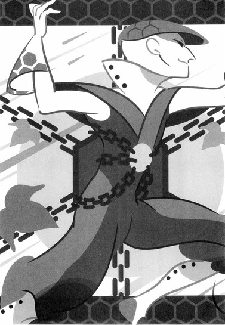
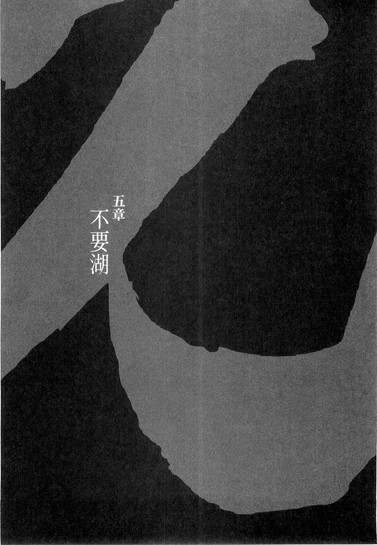

| [西尾維新] 刀語08 | |
| 西尾維新 | |
| (2015) | |
|
刀語 第八話 微刀・釵
西尾維新
|
底本データ
一頁16行 一行42文字 段組１段
「ツルギ」、以後「ツルギ」に置換え注略。

「存在そのものが居ながらにして一本の日本刀──それがこのおれ、鑢七花だ」
姉・七実との死闘を経て、名実ともに日本最強となった七花と、
伝説の変体刀を七本まで蒐集した奇策士・とがめは江戸の
奥地に広がる人外魔境の異界・不要湖へと足を踏み入れる。
〝敵〟か〝味方〟か!? ──とがめたちを揺さぶる監察所
総監督・否定姫と、配下の忍者・左右田右衛門左衛門！
そして、残すところ四人！ 真庭忍軍の次の一手とは──!?
刀語は後半戦に突入！ 目まぐるしく動く因縁の物語！
刀語、第八話の対戦相手は、不要湖を守護する日和号！

序章
■ ■
最初は百人残っていた。
それがすぐに五十人になった。
時代は移り、世代は変わる。
しかしそれでも減ることはあっても増えることはなかった。
五十人は二十五人に。
二十五人は十三人に。
十三人は七人に。
七人は四人に。
四人は二人に。
そして──二人はひとりになった。
たったひとりだけになった。
百名が一名になるまで──百七十年。
百命が一命になるまで──百七十年。
しかし、このひとりがすぐに零人になってしまうだろうことは簡単に予測できた。誰に訊くまでもない、そのひとり自身がそのことを一番よく痛感していた。
受け継いだもの。
引き受けたもの。
任されたもの。
背負ったもの。
その全てが失われること。
自分の代で──その全てが終わること。
誰よりもわかっていた──わかりきっていた。
それでも、せめて守るつもりでいた──己が滅するまで。
最後のひとりとして。
最後のひとりの責任として──守り通すつもりでいた。
それはつまり、何もしないということだったが──しかしたったひとりではそれくらいしかすることがなかったのだ。
怠惰であろうと無様であろうと。
生きて。
生き残って──生き続けて。
それが自分の役割であり使命なのだと思っていた。
野心も持たない。
復讐も考えない。
ただ──生きるだけ。
ただ──死ぬのを待つだけ。
人生に絶望し、世界に失望している自分には、それは拷問のような生き方だったが──しかしそれでも、その生き方を選択することに迷いはなかった。
雨にも負けて、風にも負けて。
雪にも夏の暑さにも負ける──そういうものになろうとしていた。
しかし──
「否定するわよ」
と。
その女は──言った。
「わたしは否定する──あんたのその生き方を否定する。あんたのその生き様を否定する。格好悪くてみっともない最悪の生き方だと否定する。格好悪くてみっともない最低の生き様だと否定する。何それ、いきがってるつもりなの？ひょっとしてそれで何か満足しちゃってるわけ？笑うわね──」
遠慮なく、とめどなく。
溢れる奔流のように女は──侮蔑し、嘲笑する。
「わたしはあんたみたいな人間のことを、指をさして愚か者の見本だと指摘するわ──標本にして飽きるまで観察するわ。なんて勿体のない生き方なのでしょう。なんて勿体のない生き様なのでしょう。死んだほうがいいんじゃないって感じ？それで何かを守っているつもりだというのなら──思い上がりもはなはだしいわ」
そして──女は言う。
「でもいいわ。わたしはあんたを否定する──一切合財わずかたりともあんたのことを肯定しない。わたしはあんたみたいな人間が大嫌いよ──自己満足と自己陶酔の権化。見ているだけでも腹が立ってくるわ」
だけど、それでいいのなら──と続ける。
「使ってあげなくも──ないのよ」
それは。
二重否定の──言葉だった。
「あなたには、『不』の一文字をあげましょう」
■ ■
睦月。
丹後・不承島──対戦相手・真庭蝙蝠。
蒐集対象・絶刀『鉋』──蒐集終了。
如月。
因幡・下酷城──対戦相手・宇練銀閣。
蒐集対象・斬刀『鈍』──蒐集終了。
弥生。
出雲・三途神社──対戦相手・敦賀迷彩。
蒐集対象・千刀『ツルギ』──蒐集終了。
卯月。
周防・巌流島──対戦相手・錆白兵。
蒐集対象・薄刀『針』──蒐集終了。
皐月。
薩摩・濁音港──対戦相手・校倉必。
蒐集対象・賊刀『鎧』──蒐集終了。
水無月。
蝦夷・踊山──対戦相手・凍空こなゆき。
蒐集対象・双刀『鎚』──蒐集終了。
文月。
土佐・護剣寺──対戦相手・鑢七実。
蒐集対象・悪刀『鐚』──蒐集終了。
戦国の乱世を事実上支配した伝説の刀鍛冶・四季崎記紀の作りし完成形変体刀十二本──かつて天下統一を果たした旧将軍が全精力を傾けても蒐集できなかった十二本、その内七本までを、奇策士とがめは集めていた──
残る刀は五本！
微刀『釵』！
王刀『鋸』！
誠刀『銓』！
毒刀『鍍』！
炎刀『銃』！
その蒐集を前にして奇策士はついに尾張への帰還を果たす──しかし休む間もなく彼女は次の蒐集へと駆り立てられる！
まあこれまでのあらすじはそんな感じで！
対戦格刀剣花絵巻！
見たい聞きたい時代劇？
刀語、中盤終了、第八巻♪
一章 奇策屋敷
■ ■
江戸・不要湖。
蝦夷の踊山、陸奥の死霊山と並ぶ幕府認定の壱級災害指定地域ではあるが──この三つの指定地域の中で、不要湖だけは他の二つとは性格をやや別にしている。
まず、『山』ではなく『湖』であること。
正確には『湖』であった──こと。
そして、踊山には凍空一族、死霊山には神衛隊、それぞれ少数ながらもかろうじて『人間』が住み、生活していたことに対して──不要湖には現在、たった一人の人間さえも住んでいないこと。
ふたつの山と同じ壱級災害指定地域としてくくられてはいるものの、だからどちらかと言えば因幡砂漠に近い──少なくとも過酷さで言えばかの地と似たり寄ったりだ。
しかしそれでも、尾張幕府家鳴将軍家によって、壱級災害指定を最初に受けた場所──それが、江戸の奥地に存在する、不要湖なのである。
■ ■
真夏の強い日差しの中、険しい街道を歩く三人の姿があった。
先頭を行くのは洋装の男である──仮面で顔を隠した、すらりとした体格の男である。腰には大小。仮面には『不忍』の二文字が記されていた。彼は無言で──感情を読み取らせない振舞いで、後ろのふたりをまるで構いもせずに、歩を進めるのだった。
左右田右衛門左衛門──である。
その右衛門左衛門から若干の距離を置いて、二番目を歩くのは、ぼさぼさ頭の、上半身はだかの男──三人の中で群を抜いて背が高く、格好こそ質素だが、人目を引くという意味では前を行く右衛門左衛門の洋装仮面に引けを取らない。なんとなく所在なさそうに、落ち着かない風に周囲をきょろきょろ見回しながら、歩いている。
鑢七花──である。
そしてしんがりを歩むのは──洋装仮面の右衛門左衛門や上半身はだかで長身の七花よりも、誰よりも目立つ絢爛豪華な衣装を身に纏った、白髪の女だった。肩口で切りそろえられた、日光に映える白髪──それこそが彼女の旗印である。彼女は七花より半歩遅れて、しかし彼に寄り添うようにしながら──不機嫌そうな顔つきで、雪駄で道を行く。
もちろん、言うまでもなく。
奇策士とがめ──である。
三人連れの旅と言うのには、右衛門左衛門と、七花ととがめの距離が開きすぎているが──しかしこれが実際的な、三人の人間関係を示しているのだった。
尾張幕府家鳴将軍家直轄内部監察所総監督補佐──左右田右衛門左衛門。
尾張幕府直轄預奉所軍所総監督──奇策士とがめ。
そして──
虚刀流七代目当主にして、奇策士とがめの懐刀──鑢七花。
「ふん」
随分と長い間、三人の間に会話はなかったが──その沈黙に耐えかねたわけでもないだろうが、ついにとがめが口火を切った。
表情同様に、不機嫌そうな口調である。
それは前方の右衛門左衛門に向けての言葉だった。
「それにしても、右衛門左衛門どの。そなたのところのお姫さまは相変わらず人遣いが荒いな──そなたも大変だな。日本全国あちこち、好き勝手に派遣されて──」
「『不及』」
そんなとがめからの皮肉交じりの言葉に、右衛門左衛門はやはり振り向きもせずに、しかし言葉を返す。
「心配には及ばない──奇策士どの。奇策士どのにとってはどうだか知らないが、わたしにとってこの程度の旅路は苦にもならん」
「ああ──そう言えば元忍者、なのだったか？」
ならば旅慣れていて当然だな、ととがめは言う。
嫌味たっぷりの言葉である。
「そうそう、そう言えばそなたはわたし達の旅路も、いつからか付け回しておったのだったな──ならば確かに心配は無用だな。しかしどうだろう、そなたがわたし達の道案内を務めるとなると、あのお姫さまは尾張でひとりになってしまうではないか。総監督補佐にしてお姫さまの護衛もかねておるそなたが尾張を空けてしまえば、あやつの身に危険がないとも限らぬなあ」
「それも──『不及』、だ」
揺さぶりをかけるような言葉にも、右衛門左衛門はまるで動じない。
「奇策士どのと違い、姫さまには表だった敵は少ない──いや、姫さまと敵対している人間は、尾張城下においてはたったひとりしかいない。そしてそのたったひとりがこうしてここにいる以上──姫さまの安全は保障されていると言っていい。わたしはこうして奇策士どのに張り付いていることで、十分に護衛としての役割も果たしているということだ」
「..................」
そんなふたりのやり取りを聞きながら、間に挟まれた七花は、無言だった。とがめは右衛門左衛門のことを明らかに敵視しているし、右衛門左衛門のほうも、口調こそ穏やかであるものの、その内容を鑑みれば決してとがめのことを快く思ってはいないようだが──しかし、この三人連れの旅路を一番居心地悪いものとしてとらえているのは、実のところこの鑢七花だった。
今年の初頭から始まった刀集めの旅。
そのほとんどの場面において、とがめと七花は、ふたりきりの旅を続けていたのだ──七花が生まれ育った無人島、不承島から始まって、因幡、出雲、周防、薩摩、蝦夷、そして土佐に至るまで──
しかし、土佐において、初めてふたりの前に姿を現した洋装仮面の男──左右田右衛門左衛門。
土佐では剣士の聖地、十万本の刀を鋳潰して作ったという触れ込みの刀大仏を擁する鞘走山清涼院護剣寺までの道案内役を務め──そして今月は、江戸の壱級災害指定地域、不要湖までの先導役を務めているのだった。
──だけど。
実際、道案内役も先導も、ただの口実に過ぎないのだろう、と七花は思う。
これまでだってとがめと七花は、色んな場所──色んな危険な場所に、刀集めのために乗り込んで行った。因幡砂漠、それに蝦夷の踊山──本来ならば少人数で行くのは無謀と思われる場所にも、たったふたりで乗り込んだのだ。
だから、不要湖とやらがたとえどのような場所であったところで──地図さえ見せてもらえれば、奇策士とがめの旅路においては道案内など必要ないのである。
──なのに、わざわざ。
つまり──監視、なのだろう。
見張り役──道案内役でも先導役でもない、見張り役こそが、右衛門左衛門が上司──お姫さまから与えられた役割なのだろう。
そう七花は思う。
だからこそ──居心地が悪い。
終始監視されての旅など、どうしたって気持ちのよいものではない。
いや決して、とがめとのふたりきりの旅路を邪魔されたことが不愉快だとか、そういうことでは全然まったくこれっぽちもなく。
とがめと右衛門左衛門はしばらくの間、腹の探りあいのような言い合いを続けてはいたが、しかしやがてそれも終わり（実際、そんな不毛な会話をいつまでも続けてはいられないだろう）、再び、三人の間に沈黙が降りてくる。
だから、というわけではないけれど。
七花は、
「なあ、右衛門左衛門さんよ──」
と、言った。
「今から行く、不要湖ってのはどんなところなんだ？そう言えば、結局おれ、何にも聞いてねえや──」
「『不要』」
右衛門左衛門は短く答える。
まるで、七花からその質問があった場合はそう答えることを、あらかじめ最初から決めていたかのように。
「不要湖だからというわけではないが、それこそ『不要』だ、鑢七花──説明の必要はない。百聞は一見に如かず、だ。見ればわかる。なあ、奇策士どの」
「わたしに同意を求めるな」
とがめは悪態をつく。
が、しかし、
「まあ」
と、続けた。
「確かにあそこは説明するのは難しい場所なのだ、七花──口で言ってもその全体像をつかむことは難しかろう。自分の眼で見たほうが早い」
「ふうん......壱級災害指定地域なんだよな？ こなゆきんとこの踊山と同じで──」
「まあな」
頷くとがめ。
「しかし、命の危険という意味で言えば、あの極寒の山ほどではないと──わたしは思うがな」
「それはあなたが寒さに弱いだけだ、奇策士どの」
ぴしゃりと厳しいことを言う右衛門左衛門。
相変わらず振り向かない。
そなたに言ったわけではないわ、ととがめは一応言い返すが、しかし、彼女が寒さに弱く、それゆえに踊山では酷い目にあったことは事実なので、その口調は若干弱かったように、七花には思えた。
右衛門左衛門は、
「あそこは──人の住む場所ではない」
と言った。
「ありとあらゆる生命活動が停止している──それが不要湖だ。わたしは宗教には一切の興味を持たないが、魔界──というのは、ああいう場所のことを言うのだと思う」
「魔界、ね」
変な言葉だ、と七花は思う。
人が住んでいないくらいで魔界とは大袈裟な──とも。
だいたい、それを言うなら、七花が生まれ育った不承島だって無人島だったのだから、つまりは魔界ということになってしまうではないか。
「確かにそうだな」
そう指摘すると、右衛門左衛門はあっさりと前言を翻した。
「しかし、魔界ならずとも異界であることは確かだろう。わたしも実際に行くのは初めてだ」
「そうなのかよ」
「踊山や死霊山、それに因幡砂漠とも違って──あそこは幕府の管理下にはないからな。管理しようと試みて、そのたびに失敗している──だから今、どんな場所になっているのかは、誰も知らない」
「管理できないのか？」
「できないし、する意味がない」
七花は右衛門左衛門に訊いたのだが、答えたのはとがめだった。右衛門左衛門が何か言おうとしたところに、彼女が割り込むように、そう言ったのである。
「それはそなたも聞いたろう？ 踊山には凍空一族、死霊山には神衛隊の連中が住んでおったが──不要湖には誰も住んでおらぬのだからな。人の住む場所ではない──だからその男の言う通りだ」
「ふうん──」
「あと七花」
とがめは言う。
「あんまりその男と会話をするな」
「............」
それが言いたくて会話に割り込んだのか。
本当に敵視しているな、と、むしろ呆れるように七花は思った。
まあ、とがめが本当に敵視しているのは右衛門左衛門ではなく、右衛門左衛門の上司──なのだろうけれど。
お姫さま。
「ふっ」
軽く。
右衛門左衛門は──笑ったようだった。
それに気付いたとがめは、
「何がおかしい」
と、つっかかった。
それくらい聞き流しておけばいいのに、と七花は思うが──どうも右衛門左衛門の前ではとがめは感情的だ。
真庭忍軍の者を相手にしているときのようだ。
真庭蝙蝠に会ったとき──真庭鳳凰に呼ばれたとき。
あるいは真庭狂犬や真庭川獺に対するとき。
とがめは取り乱していると言っていいほどに、冷静さを失っていた。
まあ『裏切り者』の真庭忍軍を前に冷静でいろというのは、とがめのような立場の人間にしてみれば過酷な要求なのかもしれないが──しかし、よくよく考えてみればお姫さまは敵対しているだけであって、その意味では裏切り者ではないのだろうに、どうしてそこまで感情的になっているのか、不思議ではある。
立ち位置的にはお姫さまだって、これまでの刀の所有者──宇練銀閣や敦賀迷彩、校倉必あたりと変わらないだろうに。
何度も敵対し、何度も蹴落とした──
そう言っていた。
そのたびに復活している──お姫さま。
そのしぶとさはとがめに通じる。
そう七花は思っていた。
尾張で実際にお姫さまと顔を合わせて──その思いは確信に変わった。
つまり同族嫌悪か。
敵対云々以前に、人間同士として気が合わないのだろう。
人間同士として──
「............」
七花は──刀である。
存在そのものが居ながらにして一本の日本刀。
無人島において、父親からそういう風に育てられた。
そういう風に──仕込まれた。
だからこそ、まるで感覚器のように、四季崎記紀の完成形変体刀十二本に対し、共感覚を憶えるのだと──思う。
そして今は一本の刀として。
奇策士とがめに、身も心も捧げている。
奇策士とがめの懐刀──それが鑢七花だ。
対して、目前の男。
尾張幕府家鳴将軍家直轄内部監察所総監督補佐──『元忍者』、『不忍の右衛門左衛門』こと左右田右衛門左衛門。
この洋装仮面の男は、お姫さまの懐刀だという。
懐刀──その言葉を額面通りに受け取るならば。
──おれと同じ。
人間同士ならぬ──刀同士。
ただ、どうしてだろう、とがめがお姫さまを嫌うように、七花はこの右衛門左衛門を嫌うことはできなかった。
とがめとのふたりきりの旅路を邪魔されたのは不愉快だが（あ、言っちゃった）、まるで一本の日本刀のごとくお姫さまに仕える彼には──共感を覚える。
刀としてではなく。
人として。
共感覚を憶えるのだった。
──とがめがあの女と敵対しているというのなら。
──そしてとがめの最終目的を考えるなら。
いつか。
それも遠からず──右衛門左衛門と自分は、戦うことになるのだろうか。
きっと──なるのだろう。
そのときのことを考えれば、今はむしろ好機なのだと思う──この右衛門左衛門がどういう男で、そしてどういう『強さ』を持つ『元忍者』なのか、よくよく観察していなければ──
「虚刀流」
七花がそんなことを考えていると、ふいっと。
突然、右衛門左衛門が身体ごと振り返った。
こちらを向いて、そのまま後ろ向きに歩きながら──七花に向けて話しかけてくる。
「お前から質問されたところでこちらからも質問を返し易くなったが、そういえば、まだ訊いていなかったな──確認しておきたいことがあったのだ」
「？ なんだよ」
「おい右衛門左衛門どの。わたしの刀に勝手に話しかけるな。許可したおぼえはないぞ」
右衛門左衛門が『質問』を口にする前に、とがめが割り込む。徹底していたが、しかしその徹底振りがまたおかしかったのか、仮面の下で右衛門左衛門は微笑む。
「嫉妬とはみっともないな、奇策士どの。己の刀の眼が他に行くのがそんなに気に入らないか」
「そんなことは言っておらんわ！」
あっさり激昂する。
いつ、どんな状況であっても冷静沈着、怜悧冷徹な性格こそが策士の絶対条件ではないのかと七花は考えるが、しかしとがめは策士ではなく奇策士だった。
案外、簡単に感情的になるくらいでちょうどいいのかもしれない。
「わかったわかった、そなたに嫉妬しておるなどと思われるのは心外だ。七花、何を訊かれても答えてやれ」
「何を訊かれてもって......」
危ういことを言う。
むろん、その台詞の裏に含まれる意味を読み取れる程度には、七花も世間ずれしてはいる。これが如月あたりのことだったら、まず間違いなく、決して言ってはならないことを言っていたかもしれないが──
感情的になっても、やはりとがめはとがめ。
そのあたりは前提として見切って──いる。
危ない橋を平気で渡る。
石橋を叩かず渡り切る。
右衛門左衛門は、
「虚刀流」
と、仕切り直すように呼びかけた。
変わらず、後ろ歩きのまま──である。
「お前がこれまで戦った変体刀の持ち主──真庭忍軍十二頭領の真庭蝙蝠、下酷城城主の宇練銀閣、三途神社の長だった敦賀迷彩、日本最強・錆白兵、鎧海賊団船長の校倉必、凍空一族の凍空こなゆき、それにお前の実姉──鑢七実。以上七人の中で......、誰が一番強かった？」
「............？」
変な質問だ。
今、このときにする必要がある質問だとも思えない──七花がそんな風に戸惑っていると、右衛門左衛門は「もちろん」と続ける。
「そこの奇策士どのから提出された報告書を読めば、ある程度は推測の立つところだ──しかし、あの報告書はあくまでも奇策士どのの主観であるがゆえにな。実際いくさ場に立ち、変体刀と切り結びあった虚刀流、お前の意見が聞きたい」
「ああ......そういうこと」
「まあ、一位が鑢七実、二位が錆白兵であることは間違いないだろうが──三位以下の順位が気になるな」
「それは、お姫さまからの質問か？」
とがめが口を挟む。
質問を許可しても黙って聞いているつもりはないらしい。とにかく、七花と右衛門左衛門が、ふたりで会話することを阻もうとしているような節がある。まさか本当に嫉妬しているわけでもないだろうが......。
「『不否』──まあ、そう思ってもらって構わない。そもそもわたしのこの身体は、すべて姫さまのためにのみ動いている。わたしにそれ以外の意味を求めようとするほうが無駄だ」
「......どうなのだ？ 七花」
今度はとがめは七花に向いた。
「言われてみれば、わたしも興味がないではないな──苦戦したかどうかは考えなくてよい。あくまでもそなたの主観で、客観的にならず主観的に考えてみよ」
「考えるのは苦手なんだけどなあ──」
言いながら、それでも七花は考えてみた。
強い順番──強さの順番。
右衛門左衛門の言う通り、一位が鑢七実で二位が錆白兵であることは揺るがしようがないが──三位以下ははっきり言って団子状態だ。苦戦も何も、楽な戦いなど一度もなかったように思う。
それでもあえて言うなら──
「まにわにんところの、蝙蝠が──三位かな」
「まにわに？」
その呼称に首を傾げる右衛門左衛門。
そう言えば、右衛門左衛門の前でそれを口にするのは初めてだったかもしれない。
「真庭忍軍じゃ長過ぎるだろ。だから略したんだ」
「ああ......なるほど」
妙に納得した風の右衛門左衛門。
元忍者、だったか。
ならば真庭忍軍とも何らかのかかわりを持っているのだろうか？口振りなどから判断する限り、まさか元々の出自が真庭忍軍であるということはないのだろうが......。
「真庭忍軍十二頭領のひとり、真庭蝙蝠が錆白兵に次ぐか──その理由は？最初の対戦相手のこと、厳しい戦いを強いられたのだとしても、それは虚刀流、お前に実戦経験が足りなかったがゆえのことだと思うがな」
「いや、逆だ。蝙蝠に勝てたのはあくまで、おれに実戦経験が足りなかったゆえだ。報告書でどう書かれているのかは知らないが」
というか。
その報告書とやらには、とがめが自分に都合よくゆがめて書いている可能性が高い。まるっきりの嘘は書かなくとも、真実を隠すくらいのことはしているだろう。
だからその辺りも迂闊なことは言えないが──まあこれくらいならいいと思う。本当に危ないことを言いそうになれば、とがめは何とか止めてくるはずだ。
「今、蝙蝠と戦えと言われたら──正直、かなり難しい。まにわにの十二頭領なら、他にも何人か会ったけどさ──忍術ってのはやっぱやばいぜ。対抗するすべがない」
姉ちゃんならまた違うんだろうけどな──と、七花は付け加える。
その真庭忍軍の頭領を三人連続で相手取りながら圧勝してみせた規格外──鑢七実。
一位、である。
「ふむ。では四位は？」
「敦賀迷彩」
七花は答えた。
「あの千刀流はかなり厄介だった。千刀『ツルギ』あってこその技とはいえ──いや、本当に厄介だったのは、迷彩の使った、とがめばりの奇策のほうだよな。あの手の搦め手はおれには厳しいや」
「まあ、妥当な線だな」
とがめもそれには同意するようだった。
「わたしなら、迷彩を三位におくところだ」
「で、五位は、うーん......宇練銀閣だろうな、やっぱり──」
居食い抜きの達人。
下酷城城主──因幡砂漠にひとりで住んでいた剣士。
宇練銀閣。
「なんだかんだで、一番際どい戦いだったような気もするし。そりゃもちろん、まだ二戦目、刀集めの旅を始めてからは最初の戦いだったってこともあるんだろうけど──あの居合い抜き・『零閃』は、今でもそれだけで十分な脅威だよ。それに、何よりあの絶対領域だ」
「確かに下酷城の絶対領域さえなければ、あそこまで苦労はさせられなかったかもしれぬな。ふむ......、そうだな、となると、七花──六位が凍空こなゆきで、七位が校倉必という感じかな？」
先を読んだように、とがめは言う。
「うん」
七花は頷く。
その通りだった。
お見通しである。
「もちろん、一概には言えないんだけれど──校倉もこなゆきも、まっすぐに戦ってくれたところがあるからな。校倉なんか、むしろ自分にとって不利な条件さえ呑んじゃうみたいなところがあったし。こなゆきと校倉と、どっちのほうがって話になると、まあ同じくらいなんだけど、でも一応、おれ、こなゆきにはいっぺん負けてるわけだし」
「こだわるなあ」
とがめは呆れたように言う。
「過去の敗北をあまり引きずるなと言うのに」
つまり──まとめると。
一位・鑢七実。
二位・錆白兵。
三位・真庭蝙蝠。
四位・敦賀迷彩。
五位・宇練銀閣。
六位・凍空こなゆき。
七位・校倉必。
今のところ、こんな風になるわけだ。
あくまでも七花の主観──だが。
「なるほど──わかった。いや、わかりやすい──」
右衛門左衛門は聞き終えて、まずそう言った。
「つまり──虚刀流。お前は鑢七実や錆白兵のような例外を除けば、策を弄する人間をこそ、苦手としているわけだ」
「............！」
あ、と七花は思う。
そうだ──今の順位を見る限り、その通りだ。
単純な実力地力だけで計れば、真庭蝙蝠や敦賀迷彩の戦闘能力は、凍空こなゆきや校倉必からはるかに劣るはずなのに──それでも七花が苦手意識を持つのは、明らかに蝙蝠や迷彩のほうだった。
それは──彼らが単純に戦わないからである。
複雑に──複雑怪奇に。
策を──弄する。
宇練銀閣の絶対領域にも──同じことが言えた。
「まっすぐに戦ってくれた──と、お前は言ったが、そんなことは普通はあり得ない。策は練って当然だ。錆白兵のときや鑢七実のとき、奇策士どのが顕著に動いたようにな──」
「ふん」
名前を挙げられたところで、とがめは言う。
「そんなことを指摘したくらいでいい気になっておるのではないわ。その程度のこと、もちろんわたしも気付いておった」
「............」
さすがに嘘っぽいよとがめさん、と七花は言いかけたが、しかしまあ本当かもしれないので、あえてそう突っ込みはしなかった。
「だろうな。だからこそ──虚刀流には奇策士どのが必要なのだろう。わたしに姫さまが必要なように──」
そして。
右衛門左衛門はもう半回転し、正面向きに戻った。
果たしてどういう意味がある質問だったのか、と七花は考えたが──すぐに、ある可能性に思い至った。
とがめとお姫さまが対立しているのならば。
いつか──七花と右衛門左衛門は戦うことになる。
だから七花は、今のうちにと右衛門左衛門の一挙一動を観察しようとしていた──それと同じことを、右衛門左衛門は七花に対してしたのではないだろうか。
虚刀流七代目当主、鑢七花の弱点を採ろうと。
そして、もしそうだとしたら、その目的はいともあっさり達成されてしまったことになるが──
──大丈夫。
まだ大丈夫。
おれには──とがめがいる。
その弱点は、右衛門左衛門の言う通り、とがめの策があれば十分に補えるものだ──
「『不当』」
そんな七花の心中を見透かしたかのようなことを──右衛門左衛門は言った。
「不安になるにはあたらない、虚刀流──あの鑢七実や錆白兵に勝った剣士が相手では、いくら弱点を探ったところで、わたしごときでは相手にはならんよ。わたしはお前とやり合うことにならないように切実に望む者だ。なあ、奇策士どの──」
「......ふん」
とがめは、右衛門左衛門の言葉をどこまで信用したものか、鋭く彼を睨みつけるだけだった。
「ならばそなたの大事なお姫さまに、わたしの邪魔をせんように言っておくことだな──協力されることさえ、本来は不愉快なのだ」
「了解した。しかしあの姫さまがわたしの意見を容れるとは思えんがな──だから虚刀流。お前が警戒すべきは──もっと他の何かだ」
「何かって」
「さあ、着いたぞ」
しばらく直進し。
角を折れたところで──強引に七花との会話を打ち切って、右衛門左衛門は言った。
「ここから先が──不要湖だ」
壱級災害指定地域──江戸・不要湖。
それは──
がらくたで構成された、広々とした平原だった。
■ ■
一週間ほど前の話。
日本国中すべての剣士にとっての聖地、土佐の鞘走山清涼院護剣寺において、実の姉にして前日本最強、真庭忍軍真庭虫組三頭領、こなゆきを除く凍空一族、死霊山神衛隊──そのすべてを全滅・壊滅・絶滅させ、ありとあらゆる者が異口同音に化物と呼んだ鑢七実を奇跡的に打倒し、七本目の刀、悪刀『鐚』の蒐集に成功した鑢七花だったが──そこでとりあえずのところ、行き詰ってしまったのも確かだった。
もとより、奇策士とがめが刀集めの旅を始める前に、所在・所有者について情報を持っていた四季崎記紀の完成形変体刀の数は六本である。
その六本──絶刀・斬刀・千刀・薄刀・賊刀・双刀の蒐集は既に終わっていた。
むろん、残る六本についても、旅の最中に少しずつ情報は集まっていた──真庭忍軍の実質的なかしら、真庭鳳凰と同盟を結ぶことにより（裏切り者である真庭忍軍との同盟はとがめにとってはかなり不本意なものではあったが）、どうやら江戸と天童に、それぞれ一本ずつ、四季崎記紀の完成形変体刀があるらしいことは知れている──が、忍者の情報などどこまで信用していいものかはわからない。いくら、鑢七実のことを教えてくれたのが同じく真庭鳳凰だとは言っても──あれは真庭忍軍にとっても必要なことだから教えてくれたに過ぎないだろう。
化物──鑢七実を打倒できるとすれば、それは実の弟たる鑢七花をおいては他にいないだろうという読みだ。
実際──
弟でなければ、七花は七実に勝てなかっただろう。
そんなわけで、七花ととがめは、いったん──と言うより、ようやく、尾張へと帰ることにしたのだった。
家鳴将軍家のお膝元──尾張。
本来ならば出雲の三途神社で千刀『ツルギ』を蒐集した時点で戻ってくる予定だったのが、錆白兵の挑戦を受けたり校倉必に騙されたり想定外に鑢七実が出現したりで、延び延びになっていたが──
ついに。
ふたりは尾張へと、到着したのだった。
厳格な街だ、というのが七花の第一印象だった。
都市らしい派手さ、きらびやかさと言うのならば、不承島から本土に上がって最初に訪れた京の都に及ぶべくもないが、しかし──この街には、幕府の管理下にあるからなのかどうなのか、とにかく威厳がある。
それに──大きい。
街の造り自体が大きい。
そして──道が広い。
「計画都市ゆえにな」
そこについては、とがめは説明してくれた。
「地震に備えた街づくりになっておるのだ。建物同士も離れておるだろう。この辺りは、いずれ大きな地震が来るだろうと予言されておってな──いざそのときが来たときに混乱が起きぬようにしておるということだ」
「はあん──家鳴幕府もよくそんなところを本拠地にしたもんだな」
「まあ、心配せずともあたし達が生きておる間には地震など来ぬだろうよ。そもそもわたしは予言など信用しておらぬ」
「だろうな。運命は自分で切り開くもの、か？」
「違うな」
とがめは笑う。
「運命は自分で言い張るもの、だ」
自分の成功を運命だと言い張れば嫌味がないし、自分の失敗を運命だと言い張れば悔しくもなかろう──
そう言った。
まあなるほど、真理ではある、と七花は思った。
屋敷町に入ると、さすがに幕府の重役ばかりが住む町である、通りの質実剛健さは更に増した。能天気な七花でも、思わず緊張してしまうほどである──今まで訪れたどの町とも違う印象を受けた。屋敷町の向こうに見えるのが尾張城なのだろう──因幡で見た下酷城とはまるで規模が違う。
──あれが。
──あれがとがめの──職場で。
──そして──仇なのか。
そう思えば、緊張は一層増すというものだった。
とがめにとって、この尾張という町は地元であり根城であると同時に──敵地の真っ只中なのだ。この土地で彼女は──これまで十数年の月日を送ってきたのである。
その心中は想像を絶する。
無人島で育った七花には──まるでわからない。
そう思うと、少し前を歩くとがめの背に、迂闊に声をかけづらかった。
が、しかし、この屋敷町の一角に、ただ一軒だけ、この質実剛健な土地柄に相応しくない、浮いている建物を発見したことで、七花の緊張は一気にほぐれた。
七花はすぐにそれをとがめに報告する。
「おい、とがめ。見てみろよ、あそこの屋敷──こんな雰囲気の中、一軒だけやたらに飾り立てて、派手な色を塗りたくっているぜ。屋根にはわけのわからん金色のしゃちほこなんか載っけてるし。おれもあんま人のことは言えないけど、どこにでも空気の読めない奴ってのがいるもんだ。悪趣味な屋敷だぜ。ははは、どんな目立ちたがり屋の家なんだろうな」
「わたしの家だ」
そんなやり取りを含みつつ。
奇策士とがめは──八ヵ月ぶりの帰宅を果たした。
屋敷の管理は雇った者に任せていたらしい──週に一度、簡単な清掃だけをやってもらっていたようだ。今日はその日ではなかったようで、とがめの家──どうやら奇策屋敷と呼ばれているみたいだが──は、無人だった。
屋敷の中は、しかし外側とは違って、絢爛豪華さには欠けていた──話を聞いたところ、どうも、刀集めの旅に出るにあたって、とがめは徹底的に身辺を整理したようだ。どうせしばらく帰れなくなるだろうことはわかっていたということか。それとも、尾張の人間にわかりやすく自分の覚悟を示すための示威行動だったのかもしれない。
「茶でも振舞ってやりたいところだが、残念ながらわたしはすぐに登城せねばならんでな。悪いが七花、しばらくの間、留守番をしておいてくれ」
一休みしたところで、とがめは着替えながら、そう言った。さすがに旅装束のままで登城するわけにはいかないのだろう（とは言え、十二単衣を二重に重ねたようなその旅装束が旅に適していたかと言えば、果たして疑問だが）。むろん、七花はその着替えを、手伝えと言われるまでもなく手伝っている。そのあたりはもう手馴れたものである。
「留守番？」
七花は訊き返した。
「おれのことを、城の連中に紹介するんじゃなかったのか？」
「その手筈だったのだがな──少し事情が変わった。あの不愉快な女が復権しておるとなると、そなたを城の中にまで連れて行くのは──危険だ」
「危険って、おれが？」
「いや、わたしがだ」
とがめは言う。
「登城にあたって、刀は置いていかねばなるまい。そうしたほうがむしろわたしにとっては安全だ──右衛門左衛門のこともある。......そんな顔をするな。今のところ、刀集めは万全に進んでおるのだからな──恐らく、残りの四季崎の刀についての情報を集めるために、わたし達はしばらくは尾張に滞在することになるであろう。ゆえにそなたはしばらくこの屋敷で暮らすことになる」
「この屋敷で」
「うむ。この悪趣味な屋敷でだ」
根に持っていた。
しっかりと。
「であるからして、今のうちに慣れておけ──大抵のものは片付けてしまったから、色々買い込まねばな。人も新たに雇わねばならぬか......厄介な話だ。旅をしているほうがよっぽど楽だ」
そんなことを言いながら。
とがめは──尾張城へと向かっていったのだった。
こうなると七花はすることがない。
言われた通りに慣れておこうと、奇策屋敷の中をうろうろしてみたが、それもすぐに終わった。とがめの身分に相応しい広い屋敷ではあったが、迷子になるほどではない。昼寝でもしようかとも思ったが、しかしとがめが城で仕事をしている中、自分は惰眠をむさぼるというのもなんだか抵抗がある。
そう思って、仕方なく庭に出て（週一回の清掃の際に手を入れられているのだろう、きちんと整備された庭だった）、ひとりで稽古などしていると、多少は気もまぎれた。
一刻ほど経過しただろう。
そろそろ帰ってくる頃だろうかと、七花が塀の向こうの尾張城を見上げたそのとき──
「『不久』」
と。
背後から──そんな風に声をかけられた。
驚いて振り向けば──（いつ、後ろをとられた？）──そこにいたのは誰あろう、左右田右衛門左衛門だった。
先月、土佐の港で顔を合わせた男──いや、右衛門左衛門は仮面をかぶっているので、正確には顔を合わせたわけではないけれど──
「久し振り──と言うほどではないな、虚刀流」
右衛門左衛門は言った。
「鑢七実に勝利を収めたそうではないか──元を正せばそもそもは鑢家の姉弟喧嘩のようなもの、それに刀集めが偶然かかわってしまったというだけの話なのだが──しかしひとりの武人として、見事だと言わせてもらおう」
「......あんた、どうやってここに？」
七花は訊く。
右衛門左衛門は面白くもなさそうに、
「普通に、歩いてだ」
と答えた。
「門をくぐるときに、お前の姿が見えたのでな──稽古の最中のようだったので、声を掛けるのをためらった。それだけのことだ」
「......それだけのことで、人の後ろを取るな」
「それは失礼したな。人の後ろを取るのが得意なものでな」
右衛門左衛門は悪びれる風もない。
まあ、どうやってここに来たかはわかった──次はどういう理由でここに来たのか、である。
「とがめなら......いないぜ」
自分なりに考えて、七花はそう言った。
「今、城に行ってる」
「ああ、知っている──だからこそ、わたしはここに来たのだ」
「だからこそ？ えっと......なんとか姫の遣いってことか？」
「否定姫だ」
即座に、右衛門左衛門は訂正した。
「なんとか姫などと──二度と言うな」
静かな、落ち着いた口調ではあったが──どうやら気分を害したようだ。
──忠誠心って奴か。
まあそれはそうだ。
自分だって、とがめが『なんとか士』などと言われれば腹が立つ。
「まあ、姫さまの遣いと言えば、そういうことになるのだろうな──わたしは姫さまの命令なしで動くことはないからな」
「じゃあ、城で──なんかあったのかよ」
不安になる。
その不安を感じ取ったのか、
「心配せずとも、そういうことではないよ──」
と、右衛門左衛門は言う。
そういうこと──とはどういう意味なのか。
七花は警戒する──その警戒に構わず、右衛門左衛門は続けた。
「旧将軍が集められなかった完成形変体刀をこれほどの短期間に七本まで集めたのだ。奇策士どのは上役からお褒めの言葉をいくつかいただき、今後の活躍を期待すると激励されていたよ。まあ、奇策士の奇策、大当たりといったところだな──それでも浮かれた顔ひとつ見せんのは見事だと言うか、可愛げがないと言うか──」
「......で？」
「だから、刀集めの今後──だよ。うちの姫さまがな」
右衛門左衛門は静かに言った。
「変体刀に関する情報を持っている──のだ」
「..................」
「姫さまはその情報を是非奇策士どのに話したいということで、奇策士どのは我があるじの屋敷に呼ばれている──城からの帰り道、我があるじの屋敷に寄るように言われている。しかし、刀を集めるために実際に動くのは虚刀流、お前なのだからな。ならばお前をその席から外すわけには行くまい──ゆえに、わたしが呼びに来たというわけだ」
ああ、そういうことか──と七花は理解する。
とがめはどうやら、立場的に敵対している否定姫に、自分の刀たる七花のことを紹介したくなかったようだが──こうなってしまうと、そういうわけにはいかなかった。
とがめと七花の目的は変体刀集め。
その変体刀の情報を持っていると言われれば──たとえ嫌でも否応なく動かざるを得ない。たとえ相手の目的が見え透いていたところで、とがめは七花を紹介せざるを得ないのだった。
城ではなく相手の屋敷──というのもうまい落としどころだろう。
否定姫の妥協を感じさせる。
それは妥協という名の狡猾さだが。
「とがめは──もう、お姫さまのとこの屋敷に？」
「ああ。ちなみに、虚刀流。お前のところに迎えの人間をやることも伝えてある──その人間がわたしだとは、あえて告げておらんがな」
「............」
それを告げていたらとがめは承諾しなかったろう、と七花は思う。
それから七花は、この話自体が否定姫から仕掛けられた何らかの罠である可能性を考えたが──しかし、この場合、今の状況のもう一重外から罠を仕掛けるのはあまり意味がない気がしたし、もしそうだったとしても、あのとがめとためを張れるような女を相手に七花ごときが頭をひねったところでどうしようもないだろうと、その可能性については考えないことにした。
七花にとって大事なのはただ一点。
否定姫の持つ『変体刀に関する情報』とやらが──どこまで信用のおけるものなのか、である。
それこそまったくの嘘、でたらめであるという線もあるだろう──とがめと七花を呼びつけるためだけの口実ということだ。
しかし、どうだろう......そんなすぐにばれるような嘘を、否定姫ほどの立場の人間がつくものだろうか？それは大袈裟に言って、勅命である刀集めの旅の妨害工作になってしまうし、ならば己の失点に繋がるはずだ。
それくらいはさすがに七花でもわかる。
ならばまるっきりの嘘というわけではないのだろう。
あくまでもそれは、否定姫が己の失点を怖れる人間ならば──という話ではあるけれど......。
「一応、留守番を任されてるんだけどな」
それでも一応そんな風に、七花はとりあえずの抵抗を試みるが、
「誰もいない家を守ることに何の意味がある」
と、右衛門左衛門は言い返す。
「お前の役割は奇策士どのを守ることのはずだ──違うかな」
「違わない──けど」
「ならば──ここはわたしについてくるしかないはずだろう。何せ、少なくともこの尾張という場所においては──わたしは奇策士どのにとって、二番目に警戒すべき人間なのだからな」
「............」
「『不思』──わたしをひとりにしておくことが、お前にとってさして得策とは思えないが、如何かな」
うまく言いくるめられただけだったのかもしれない。
この手の言い合いに七花は酷く弱い──他人と議論ができるような素養が、無人島育ちの彼にはないのである。同じく無人島育ちの鑢七実は、あれはあれで弁の立ったほうではあるが──残念ながら七花にはそういう才覚はない。
本来ならば、それでも動かず、あくまでもとがめに言われた通りに留守番をし続けることこそ正しい選択だったのかもしれないが──しかし。
右衛門左衛門の言葉に、少なからず本音が混じっているような気もしたのだ。
同じように、誰かに忠心を捧げる者として。
だから結局──もう少しの間、躊躇こそしたものの──七花は、右衛門左衛門についていく形で、奇策屋敷を出たのだった。
そして連れて行かれたのが否定屋敷である。
位置的に、奇策屋敷から反対の場所にある、雑木林に囲まれた武家屋敷──もちろん、奇策屋敷のような悪趣味さのかけらも感じられない、質実剛健極まりない──あるいはこの屋敷町の中で一番、厳格な雰囲気が漂っていると言えるかもしれない、そんな屋敷だった。
住んでいる者の権力を感じさせた。
奇策士とがめは、屋敷の中に這入らず、門の前で七花の到着を待っていた。さすがのとがめも、刀なしでこの屋敷に這入るつもりはない──ということのようだった。右衛門左衛門に連れられてきた七花を見、一瞬驚きの表情を浮かべたようだったが、しかしそれもすぐに取り直して、
「まったく」
と言った。
「のこのこ連れられてきよって。そなたさえ来なければ、それを口実にあの不愉快な女に会わずに帰ることもできたというのに」
「あ、ごめん──でも」
「わかっておる。変体刀の情報をちらつかされれば──いずれ、会わぬわけにはいくまいよ」
口ではそうは言うものの、しかしとがめは非常に不機嫌そうだった。
右衛門左衛門によれば、とがめは上役から褒められたはずだったが──その『成功』も、これから否定姫に会うとなると、吹き飛ぶのかもしれなかった。
「まったく、尾張に帰りつくなりこれだ。一本取られたとしか言いようがない──」
否定姫。
奇策士とがめの天敵──
「そういう話は、あとでやってもらおうか」
右衛門左衛門が言った。
「姫さまがお待ちかねだ。まずは中に這入ってくれ」
二章 否定屋敷
■ ■
章は変わったが──まだ時系列は一週間前のまま。
否定屋敷である。
その一室──
奇策士とがめと鑢七花。
そして否定姫が──対面を果たしていた。
「ぷっ......」
と。
しばらくの沈黙ののち──そんな風に。
「く、くく......はは、あは、あは、あはは──」
否定姫は──笑った。
最初はそれでもこらえるようにしていたようだったが、しかし、最後にはこらえきれなくなったようで──部屋中に響き渡るような大声で笑ったのだった。
「に──似合い過ぎる」
「............」
どうやら──とがめの髪型のことを言っているらしい。
つい先月まで、旅に邪魔にならない程度にまで長く伸ばされていた奇策士とがめの白髪は、現在、肩口で一直線に切りそろえられている。それは土佐の護剣寺における、鑢七実との戦闘において払われた尊き犠牲なのだが──どうやらとがめは幕府に入ってから髪を短くしたことがなかったようで、その子供のような髪型に否定姫は大受けしてしまったらしい。
まあ、わからなくもない。
確かに異様に似合うのだった。
切られた直後こそ、七花は違和感を覚えていたが、今となってはとがめが髪を伸ばしていた頃を想像するのが難しいくらいに、その白髪おかっぱの頭は彼女の顔立ちに似合っている。
言ったら怒られそうなので言わなかったが。
しかし、ここで否定姫があっさりと言ってしまったわけだ。
──否定姫。
とがめは七花のことを、できれば否定姫に見せたくなかったようだが──否定姫がわざわざこのような場を設けてまで七花を見ようとしたのと同じくらい、七花もまたとがめの天敵だという否定姫のことに興味があったので──
部屋の上座に堂々と座る、今は腹を押さえて爆笑し続けている彼女の姿を、見る。
──姉ちゃんの見稽古みたいにはいかないけれど。
それでも──情報を得ようと、見る。
見据える。
その──目を引く姿を。
しかし、目を引くと言っても、とがめのように過度に装飾された絢爛豪華な衣装を身に纏っているということでも、あるいは左右田右衛門左衛門のように洋装に身を包んでいるということでもない。着ている服自体は、上流階級の者としてはまあ普通の、しかしどちらかと言えば地味な模様の着物だった。
目を引くのは衣装ではなく──彼女自身だった。
金色の長い髪。
青い目。
透き通るような白い肌──
「............」
外国人──である。
七花は賊刀『鎧』を蒐集するために九州に滞在した際、一度だけ遠くから見たことがあった──海の向こうからやって来た、異国の者の姿を。
目のくらむような金髪碧眼。
それが──否定姫。
人目を引くのはあくまでも、一部を除き海外との交流を一切禁止している、鎖国中のこの国であるからというだけで──海を渡れば普通の景色に、彼女はまぎれてしまうのだ。
だから、そういう意味では驚くにはあたらないのかもしれないが、しかし──少なくとも、七花がこの八ヵ月、見てきたこの国の常識においては、幕府の中枢にかなり近いところに、このように外国人が据えられているという事実は、そうそうあり得ないことではないのだろうか。
──外国は言葉が違うはずだけど。
しかし、彼女の喋る日本語は──流暢だった。
様々な疑問を込めて、七花は横に座るとがめに目をやったが──とがめはこちらを見ておらず、ただ正面の否定姫を見据え、笑いものにされる屈辱に顔を真っ赤にして耐えていた。
そして、ようやく否定姫の笑い声が途切れ途切れになったところで、
「きさまにまず言いたいことがあったのだ」
と、口火を切った。
「きさまなら──『ちぇりお』が外国の言葉だと、知っておったのではないのか？」
まずそれを言いたかったのか、と七花は呆れる。
とがめの口調は非常に真面目だったが、それが逆に滑稽だった。
同じことを感じたのか、否定姫は更に笑って、それから、
「なあんだ、気付いちゃったの」
と言った。
知っていたらしい。
「............」
無言で──とがめが立ち上がった。
それにあわせるように、否定姫も立ち上がる。
そして、一歩一歩、互いに距離を詰めていく。
七花がその動きに何らかの反応を見せる前に、ふたりは部屋の中央で衝突する直前にまで近寄りあって──にらみ合う。
顔同士が、もう触れ合わんばかりだった。
否、実際、鼻先あたりは触れ合っている。
とがめの身長が低いのに比して、否定姫の身長は高い（──敦賀迷彩と同じくらいか、あるいはそれ以上ありそうだ──）。ゆえにとがめが下から睨み上げるのに対して否定姫は上から睨み込むような姿勢になった。
腕組みをするとがめ──
頭の後ろで手を組む否定姫。
一種近寄りがたい、火花の散るふたりだった。
怖い。
七花は素直にそう思った。
ふたりが──ふたりとも、表情だけは笑っていることが、何よりも怖い。
「今度こそは蹴落としてやったつもりだったのにな──まったくきさまのしぶとさには呆れ返るわ。そんなにもこの世に未練があるのか」
「あんた程度に殺されるほど、わたしはやわじゃないって何度言えばわかるのよ──あんたの真っ黒な腹の中を全部暴くまではわたしは何度でも蘇るわ」
「何度蘇っても無駄だ──きさま如きに暴かれるほど、わたしの腹の黒さは淡くはない。何度蘇ったところで何度でも変わりもなくあっという間に蹴落としてやる──いや、今度は踏み潰してやろう」
「否定する──わたしはあんたのその言葉を否定する。あんたはわたしをもう殺すことはできないと予言するわ。それどころか、逆にわたしがあんたを殺すと予言する。跡形もなく──わたしは誰かさんと違って、し損じなどしないわ」
「やってみろ──格の違いを思い知らせてやる」
「思い知るのはあんたのほうよ。地獄の底で奇策でもうどん粉でも練ってなさい」
「やかましい。潰してやるからさっさと隙を見せろ、この不愉快な女が」
「そちらこそ、暴いてやるからさっさと隙を見せなさい、この不愉快な女が」
否定姫は着物の懐から鉄扇を取り出して──ばん、と開いた。
それが合図だったかのように、とがめがこちらに戻ってきて、座り直す。否定姫も同じように、上座へと戻った。
「では、仕事の話をしようか」
「ええ。そうね」
............。
え、今の挨拶だったの？
七花はとがめと否定姫を交互に見るようにしたが、しかし、ふたりはまるで構わず、話を進めるのだった──仕事の話を。
仕事。
即ち四季崎記紀の完成形変体刀集め──
「まずは──おめでとうと言ったところかしらね。すごいじゃない、さすが奇策士と言ったところなのかしら？四季崎記紀の刀を、たった七ヵ月の間に七本も集めちゃうなんて」
「......わたしが刀集めを始めたのは、実際はもう少し前からだから、その計算はあくまでも睦月から計算した場合のことだがな──」
「あるいは、そこの虚刀流くんがあんたの刀となってから計算した場合、かしら？」
そこで否定姫は七花に水を向けた。
鉄扇を閉じ、その先で七花を示す。
「初めまして、七花くん──わたしは否定姫よ」
「......どうも」
ぺこり、と七花は軽く頭を下げた。
すると横から、
「七花！ こんな奴に頭を下げるな！」
と叱咤の声が飛んだ。
厳し過ぎる。
「ふふふ」
否定姫はそんな様子を見て、笑い声を漏らす。
どうも──抱いていた想像と違う。
こんな陽気そうな人間だとは思わなかった。
まあ、その想像は、左右田右衛門左衛門からの連想だったので、外れて当然と言えば外れて当然なのだけれど──
「......そう言えば、あいつはどこに行ったんだ？」
七花は否定姫に問うた。
このあたりは怖いもの知らずである。
無人島育ちの面目躍如とも言えよう。
「右衛門左衛門──さん。あの人、あんたの側近じゃなかったのかよ」
「ああ。あいつなら天井裏にいるわよ」
否定姫は、鉄扇の先を今度は上方向へ向けた。
「あいつはとにかく不景気な面していて、見てるとこっちの気分まで沈んでくるからね──控えるときは天井裏に控えて、わたしに姿を見せないように言いつけているのよ」
「............」
哀れだ......。
七花は素直に同情した。
「あの仮面も、その不景気な面を隠すためにわたしが与えたものなんだけどね。あいつの根暗さは仮面程度じゃ覆い隠せるものじゃなかったのよ」
「............」
聞きたくない......。
「ふっ」
そこでとがめは勝ち誇ったように胸を張る。
「わたしは七花にそんな無茶を強要したことは一度もない」
「............」
あんたはおれにわけのわからん口癖を強要したことがある、と七花は思ったが、しかしそこを突っ込むのはやめておいた。
あるじの顔を潰してはならない。
というか、そんなところで張り合ってどうしようというのだろう。
まあ──とにかく、右衛門左衛門は天井裏に潜んでいるらしい。とがめと否定姫のやり取りをどんな気分で聞いているのかは定かではないが──少なくとも聞かれているつもりで、話さなくてはならないのだろう。むろん、とがめにはそんなこと、言うまでもない前提に違いないが──
「まあ、そういうわけでね。わたしとしちゃあ、あんたに協力してあげたくなったのよ。浅からぬ縁のあるあんたが、一生懸命健気に刀を集めていると聞いたら、じっとしてられなくてね──右衛門左衛門にも動いてもらったり」
「わざとらしいな──どうせ、わたしを追い落とす理由でも探しておったのであろう」
「まあ、そうね──だってわたしは内部監察官なんだもの。あんたみたいな怪しい人間を放置しておくなんてこと、役職上できるわけがないわ」
「怪しさで言うなら、まずは己自身の怪しさでも計っておればよかろう」
「否定する。わたしは怪しくなんかないもの」
否定姫は言った。
「まあ、その過程でね──面白いことがわかったから、それを教えてあげようと思って、あんたのことを待っていたのよ」
「待っていた、か。きさまらしいわ」
とがめは否定姫の言葉を軽く受けた。
「では、聞いてやろう。ちょうど行き詰っておったところでな──しばらくは情報集めに終始しようと思っておった。もしもきさまが有力な情報をくれるというのなら、そんなありがたい話はない」
「期待してないって口調ね」
「あたりまえだ。きさまに期待などできるか──しかし、一応優しさから言っておいてやるが、お姫さまよ、わたしを欺こうなどと思うなよ。きさまがこれから口にする情報とやらががせだった場合──それがたとえ故意でなかったとしても、わたしは一片の容赦もなくそれを口実にきさまを潰すぞ」
「怖いこと言うわね──でも、わたしだってそれくらいわかってるわよ。こないだ──のこないだくらいは、その手であんたに潰されちゃったんだもんねー。もうそりゃくちゃっと」
けらけら笑いながら、否定姫はそう言う。
とにかくよく笑う。
自分が漬されたときの話などよく笑いながらできるものだ、と七花は呆れた。
「心配しなくとも、信憑性のある情報よ──正直なこと言うと、わたしとしてもあんたには刀集めをつつがなく行なってもらわないと困るのよ」
「困る？ 何故だ」
とがめは、それは本当に不思議そうに、訊いた。
「きさまは部署がまるで違うであろう──刀集めがどうこうなど、きさまにはまったく関係がないはずだ」
「まあ、こっちにも政治的なからみが色々とあってね──からみと言うかしがらみと言うか。あんたの刀集めを、できれば利用したいのよ。そういう理解をしておいて。......それに、あんたも城の中に入って来たんならもうわかってるでしょう？あんたの刀集めは、天守閣の皆さまから大いに注目されている──いまや幕府内に、四季崎記紀の完成形変体刀集めに無関係な部署なんて存在しないのよ」
「............」
それは、裏を返せば、とがめが命じられた──とは表向きの話で、実際にはとがめのほうから申し入れた刀集めは、それほど現実味を帯びた案として採用されていたわけではないということなのだろう。
できるわけがない。
そう判断されていたのだ。
それが──十二本のうち半分以上、七本までを集めたところで──現実味を帯びてきた。
外連味だけではない──現実味を帯びてきた。
そういうことか。
「現実味が帯びてくるのを、わたしは待っていた──鑢七実なんていう化物が出てきたのは計算外だったけど、いよいよ八本目という段になって、ようやく幕府内の空気も変わった。これでわたしもおおっぴらに動くことができるということよ。表立ってあんたに協力することができる」
「協力など頼んだ覚えはない。それとも手柄を横取りでもするつもりか？」
「まあ、そういうことも企んではいるわね。うちの右衛門左衛門じゃ、刀集めは無理だろうし──でも、それでも、あんたに協力しようというのは本当」
「......所在不明・所有者不明の残り五本の刀の情報を教えてくれようと言うのか？」
「それは残念ながら」
否定姫は──首を振った。
とがめの言葉を否定したのだ。
「なんだ。違うのか」
さしてがっかりした風もなく、とがめは言う。
「悪いがお姫さまよ、わたしはそれ以外の情報など求めてはいな──」
「──それが四季崎記紀本人の情報であっても？」
唐突な──言葉だった。
まだ途中だったとがめの言葉も、そこから続かない。
くすり、と否定姫は──笑う。
「江戸の不要湖。知ってるわよね」
「それは──当たり前だ」
とがめは、相手の意図を探るような慎重な口調で、とりあえずそう答える。
「蝦夷の踊山、陸奥の死霊山と並ぶ、壱級災害指定地域のひとつ──であろう」
「そう」
頷く否定姫。
「その不要湖を──四季崎記紀が工房として使っていたという情報があるのよ」
「なっ......!?」
とがめは驚愕に──腰を浮かした。
「あそこが──工房、だと？」
「そう──あの、どうしたって人の住みようもない、今も三つの壱級災害指定地域の中で唯一人が住んでいない不要湖を、あの伝説の刀鍛冶は根城にしていたらしいの」
ああ、踊山にも死霊山にも、今はもう人は住んでいないのだっけ──と、否定姫はわざとらしく訂正した。
工房──その言葉に七花は、考える。
つまり──四季崎記紀は、その不要湖とやらで刀を作っていたということなのか？
「もちろん、双刀『鎚』のような例もある──すべての刀をそこで作ったというわけではないのでしょう。でも、千本の変体刀のそのほとんどは、江戸の不要湖において作られた──みたいよ」
四季崎記紀の刀作りの工房。
伝説でありながら、あるいは伝説だからこそ詳細が不明な刀鍛冶・四季崎記紀の工房を突き止められたとなると──それは確かに有益な情報である。その工房を調べれば、残り五本の完成形変体刀に関する情報も、きっと集まることになるだろう。
それに──七花は、ひとつ、思い出していた。
とがめはもちろん、不要湖と聞いた段階で思い至っていることだろうが──真庭鳳凰が薩摩においてとがめと同盟を結ぶ際に、こちらに流してくれた情報のことである。
刀の所在を三箇所、鳳凰は教えてくれた。
陸奥の死霊山──これは鑢七実が蒐集した。
出羽の天童──これについてはまだ確認が取れていない。
そしてもうひとつこそが──江戸の不要湖である。
「らしい、とか、みたい、とか......えらく不確かな情報のようではないか」
「それは言葉の綾よ。確信はあるわ。まあ、情報元は明かせないけど」
「しかし......きさまの言った通りだ。あそこは人が住めるような環境ではないぞ」
「だからこそ、秘密で内緒の変体刀作りには向いていたってことなんじゃない？それに、四季崎記紀が変体刀を作ったのは数百年も前の戦国時代のことよ──当たり前だけど、まだ不要湖は災害指定を受けていない。それは災害指定を出す尾張幕府そのものがないからってのもあるけど、それくらい前の話なんだから、不要湖も今よりはいくらかましな状態だったんじゃない？そう思うけど」
「しかしそれでも──あそこには日和号があるであろう」
「だから、あれも当時はまだなかったんじゃないかって話──日和号だって有史以前からあそこでああしていたわけじゃないでしょ」
日和号？
当たり前のように、とがめと否定姫との会話の間に登場したその単語に、七花は引っかかったが──しかしそれはやはり、ふたりにとっては当たり前のようで──口を挟む隙もなく、そのまま会話は進行する。
「──あるいはこうも考えられるわよ、奇策士さん。覚えてる？以前、隠密班の連中が不要湖について変な結論を出して失笑を買ってたじゃない。ほら、真庭忍軍の裏切りをいいことに、あんたが潰した隠密班」
「あれはわたしの企みではない。たまたまだ」
「どうだか。庇わなかったのは確かでしょ」
「庇う理由がないからな」
「あはは」
「で、その隠密班が何と言っていたのだ？ ちょっと覚えておらぬな」
「あんたの記憶力も意外と抜けてるわね。ほら、あの日和号は、何かを守るためにあの不要湖にあるんじゃないかって──そんなこと言ってたじゃないの」
「ああ。思い出した」
とがめはぽんと膝を打つ。
わかりやすい『思い出した』の動きだった。
「だとすれば、失笑したのはわたしかもしれぬな。あの不要湖に守るべきものなどあるわけがない──」
「──だけど、その守るべきものが、たとえば四季崎記紀の工房だったとしたら？」
「............」
今度は、とがめは声をあげなかった。
それくらい驚いたということなのだろう。
「日和号は──四季崎記紀の生きた戦国時代から数百年が過ぎた今もなお、その工房を守り続けているのかもしれないわ」
■ ■
壱級災害指定地域──不要湖。
しかし、この不要湖がその名の通りに湖であったのは、今から千年も前の話である──そんな気の遠くなるような昔から、この湖はいわゆるごみ捨て場として使われていた。
文字通りに不要になったあれこれを処分する場──いや、処分などと言えるほどに、何らかの作業をするわけではない──ただ、がらくたを湖の中に沈めるだけである。
放り込まれたがらくたは、湖の底に沈殿し、堆積し──ゆっくりと時間をかけて、やがて湖を完全に埋めた。
埋め尽くした。
不要ながらくたで埋め立てられた湖。
木屑と鉄屑で構成された平原。
それが今現在の、不要湖の姿である。
結局、尾張にはほとんど腰を落ち着けることもなく、とがめ達は、否定屋敷を出てすぐさま旅支度を整えて、江戸に向かうことになったのだった──というわけで、時系列はようやく現在に戻って、奇策士とがめと虚刀流七代目当主鑢七花が、その不要湖に辿り着いた場面である。
道案内役だった左右田右衛門左衛門は、既にこの場からいなくなっている──自分の役割はこれで終わりだと言って、ついさっき、帰っていった。土佐のときは、案内を終えたあともしばらくは行動を共にしていたくせに、と七花は思ったが、しかし、このあとに否定姫から命じられた仕事をもうひとつ残しているとのことだった。
その仕事が何かまでは教えてくれなかったが、しかし如何せんあのお姫さまが出したという命令だ、きっと理不尽なものに違いない。
七花は右衛門左衛門に大いに同情した。
それは自分自身に対する同情とも似通ったものだったかもしれない。
同病相哀れむ、である。
まあ、何はともあれ、一週間ぶりくらいに、ようやく七花はとがめとふたりきりの旅路と相成ったわけだが──しかしそうそううまくことが運ぶはずもない。
かつては湖だったがらくたの平原を、足もとに気をつけながら（尖った金属などを踏みつければ非常に危険である）、しばらく歩いていると──それが視界に入ったのである。
「..................」
最初は──人だと思った。
人間だと思った。
少なくとも、それを模して造られたことは間違いないだろう──しかし、よくよく見てみれば、それを人と評することにはかなりの無理があった。
まず──全身が金属でできている。
腕が左右に二本ずつ、合計で四本ある。
脚も──腕と同じように、四本あった。
頭部には目鼻のある顔が描かれており、髪の毛らしきものも植えつけられて、またぼろきれのような着物を着てこそいるが──人でないことは明らかだった。
そう、それは──
「からくり人形」
等身大の──からくり人形。
旅路の途中で、茶運びの人形くらいなら七花も見たが──いわばそれの高性能版みたいな感じなのだろうか？
「そう」
とがめが言った。
「あれが、日和号だ」
不要湖が災害指定された理由。
それはもちろん、不要ながらくたで埋め尽くされたこの場所が非常に危険だからということでもあるが──第一の理由は、不要湖にはこの日和号があるからに他ならない。
踊山や死霊山と違い、ここに人が住んでいない理由も同じである。
この日和号があるからだ。
無差別に、そして自動的に、不要湖に近付く人間を斬殺する──この日和号があるからだ。
日和号の四本の腕には。
それぞれ──刀剣が握られていた。
まるで、土佐で見た刀大仏さながらに──
「......大丈夫なのか？」
「この距離ならな」
七花の質問に、とがめは答える。
「ある程度の距離を保っていれば、奴にはこちらのことは認識できぬらしい。人を模した姿ではあるが、あの目はあくまでもただの飾りであって、全く別の、何らかの感覚器で周囲の様子を感じ取っておるらしいぞ」
「つまり、近付けば──攻撃が開始されるってことか」
「うむ」
「で──じゃあ、どうするんだ？ この距離じゃ──おれはわからねえぞ」
「だから──予定通りだ」
とがめは言った。
「いいか、七花。確認しておくが──まずは様子見だぞ。今日、今、ここで決着をつけることが目的ではない」
「わかってるよ」
「わたしも色々と疑いこそしたものの、否定姫の情報は恐らく正確であろう──ここでわたしに偽の情報を流すのは、わたしにとってよりも奴にとって危険過ぎる。ならば、このがらくただらけの湖のどこかに四季崎記紀の工房があったことは間違いがない──それを突き止めることは、今後の刀集めにとってかなり有益であろう。しかし、そのためには不要湖の番人とも言える日和号を打破する必要がある──が、その前に調べておかなければならぬこともあろう」
「だから、わかってるって」
「そうか」
とがめは頷く。
「ならば──行って来い」
とがめのその言葉を聞くや否や──七花は動いた。
しかし、直線的にそのからくり人形──日和号のところには向かわない。日和号は距離を保っている限りこちらには反応しないのをいいことに、四本足で不要湖のがらくた平原を徘徊しているようなかの人形を大きく迂回して、七花はその背後から──飛び掛かった。
途端。
日和号の首が──百八十度回転し。
七花を向いた。
この距離で見ればわかる。
日和号はどうやら──若い女性を模した人形のようだった。
「人間・認識」
ぱくぱくと。
日和号の口らしき部位が稼動した。
「即刻・斬殺」
四本の腕が──四本の刀を持って、七花に向かう。
そしてその瞬間、七花は理解する。
とがめの予想通りであったことを確信する。
否定姫の言葉──四季崎記紀の工房を守るために日和号は不要湖にあるのだというその言葉の上に、更にもうひとつ推測を重ねた、とがめの予想。
共感覚、である。
四季崎記紀の完成形変体刀に対して覚える、奇妙な感覚を──七花はここで、この距離でこそ、憶えたのだ。
日和号が手にしている四本の刀に対して──ではない。
日和号自体に対してだ。
「...............っ」
とがめが読んだ通りに、このからくり人形は──
「微刀・釵」
日和号は──確かにそう発音した。
三章 真庭海亀
■ ■
機械人形日和号。
不要湖を徘徊するかの人形は、用なしとして廃棄されたがらくたどもの成れの果て、本来ならばまだ使えたはずのがらくたどもの化身として怖れられていた。
がらくた王女。
それが日和号の異名だった。
人に恨みを抱いた無機物。
人ならぬ機械仕掛けのからくり剣士。
傀儡の剣、自動刀。
むろん、そんな都市伝説めいた物語を、現実主義の奇策士とがめや否定主義の否定姫あたりはまるで信じていなかったが──それでも日和号という人形が不要湖に存在することだけは確かだった。
ならば何のために存在するのか。
どういった理由で存在するのか。
かの人形が、四季崎記紀の完成形変体刀の一本だとするのなら──それがそのままその疑問の答となるだろう。
それが、奇策士とがめが出した結論だった。
むろん、あえて口にはしなかっただけで、否定姫だってその可能性を考えていたはずだと、とがめは思っている。日和号が四季崎記紀の工房を守っているという憶測をした以上、当然、そういう予想も成り立つはずだからだ。
その推測は、結果から見ればあたっていた。
もっとも、否定姫の場合──可能性云々の話以前に、その事実を最初からはっきりと知っていたのだけれども。
「おい。ところでお姫さまよ」
否定屋敷を後にする際──
とがめは振り返って、否定姫に訊いた。
「床の間に飾ってあった、ふたつの変な鉄のかたまりみたいなものは何だ？」
「ん？ ああ、別に？ ただの飾りよ」
否定姫は何ということもなく答えた。
「きさまの趣味らしくもなかったがな。誰かに押し付けられたか？何なら不要湖に捨ててきてやってもよいぞ」
「あはは、ありがと」
否定姫は笑った。
「でも、それにはまったく及ばないわ」
■ ■
信濃の街道をひとりの男が歩いていた。
まだ若い風貌の男である──ゆっくりとした歩調で前に進んでいる。表情も非常にのんびりとしたそれだった。
とても武士には見えないけれど、しかし男は腰に一本、帯刀していた──が、その刀は少々、変わった形をしていた。
一般的な日本刀と較べ、かなり刀身が細いのだ。
鞘に納められてなお、その幅は一寸に満たない。
いわゆるひとつの──刺突刺である。
また、帯びている刀の形と同様に、こののんびりとした表情の男のしている格好もまた、少々変わっていた──袖のないしのび装束、なのである。
そして鎖を全身に巻いている。
つまり、この男──
「......真庭忍軍十二頭領がひとり──真庭魚組指揮官、真庭海亀と見受ける」
背後からそんな風に声をかけられ。
男──真庭海亀は振り向いた。
そこにいたのもまた、変わった風貌の人間だった──この時代には珍しい、というよりかなり稀有な洋装の男である。顔面の上半分を隠す仮面には『不忍』の二文字が書かれていた。海亀と違ってごく当たり前の刀ではあるが、腰には大小を帯びている。
「ふん──なんだおぬしは？ どうしてわしが最高格好よくて最高いかした最高強い最高もてもて最高金持ちの、真庭海亀だと知っておる？」
いきなり現れた奇妙な男に対し──しかし海亀はのんびりとした口調で、余裕たっぷりに重みのある口調で、そう訊いた。
「確かにわしは最高格好よくて最高いかした最高強い最高もてもて最高金持ちの真庭海亀だが──おぬしのように頓珍漢な格好をした男など知らぬし、名乗った憶えもないのだがな」
「わたしは左右田右衛門左衛門という」
洋装仮面の男は言外に促されたところで、そう名乗った。
「『不外』──そうか、あっていたか。よかったよかった。『長寿の海亀』などというから、てっきりご老人だと思っていたのに、いざこうして対面してみると随分若い。ともすれば人違いなのかと思ったが──そうでなくて安心した」
「かっ。わしが最高格好よくて最高いかした最高強い最高もてもて最高金持ちなのは見たらわかるとしても、二つ名まで知っておるとなれば、これはいよいよ本格的だな。......左右田右衛門左衛門？聞いたことがあったかどうか──そもそも、随分ふざけた名前ではないか。十割で偽名であろう」
「偽名ではない」
洋装仮面の男──左右田右衛門左衛門は首を振る。
「今はこれが──わたしの本名だ」
「......ふむ」
どうでもいいがな、と海亀は言う。
言いながら──右衛門左衛門との距離を測る。
相手も警戒しているのだろう──随分と遠い。
「それで？ いきなり声をかけてきて、何のつもりだ。見ての通り、わしは旅の途中なのだがな──それも結構急ぎの旅だ。できれば邪魔をしないでもらいたい」
「急ぎの旅というには、随分と遅い歩調だったようだがな」
「それはわしは亀だからの。元々気長な性格なのだ。わしに言わせれば世間の皆が焦りすぎなのだよ」
「残念ながら」
右衛門左衛門は言う。
「お前の邪魔をするのが──わたしの仕事だ」
「............」
であろうの、と海亀は呟く。
最初からこの洋装仮面の男──敵意満々だった。
隠す気もない敵意──いや、殺意の塊だった。
「わしはあんまり記憶力に自信のあるほうではないから、一応、訊いておくのだが──初対面だな？」
「初対面だ──そしてこれが最後の対面となる」
「台詞が渋い」
羨ましい、と言いつつ。
海亀は、気付かれないようにしのび装束のうちから取り出した手裏剣を、右衛門左衛門の足下に向けて投げつけた。
右衛門左衛門はまるで動じる風もなく、ただ一歩後ろに引くという最小限の動きだけで、その手裏剣をかわした。
挨拶代わりに投じた手裏剣だ、元より当てようとも当たるとも思ってはいなかったが──海亀は、今の右衛門左衛門の動きに、ちょっとした疑問を覚えた。
──む。
──今の感じは。
「......個人的な恨み、ではなかろうなあ、どう考えても。わしは人の恨みを買うような不細工な仕事をしてはいないし──恨んでる人間がいたとして、せいぜいそりゃあ奇策士の嬢ちゃんくらいのものであろう。ああ、ひょっとしておぬし、奇策士の嬢ちゃんの遣いか？鳳凰の話では、奇策士の嬢ちゃんとは同盟を結んだはずだったが──」
「『不頷』」
右衛門左衛門は海亀の言葉を静かに否定した。
否定──である。
「奇策士どのは関係ない──彼女は今頃、江戸の不要湖で微刀『釵』の蒐集に取り掛かっている頃だよ。さて、あの狂気のからくり人形相手に虚刀流はどう戦うのか──興味深いところではあるな」
「............」
奇策士の遣いではない──
しかしこの男、少なくとも奇策士を知っている。
そして奇策士が刀集めに使っている虚刀流の存在を知っている。
何より──刀集めのことを知っている。
今まで通り、口元をゆるめた表情を続けながらも──真庭海亀の心中は、あまり穏やかではないものへと変貌していった。
江戸の不要湖。
と言えば、海亀と同じ真庭忍軍十二頭領のひとりである真庭鳳凰が奇策士に教えたと言っていた、刀の在処のひとつである。どの刀があるのかまでは知らないと言っていたが──かの地にあるのは、微刀『釵』だったのか。
しかし......。
「同じように」
右衛門左衛門は畳み掛けるように言った。
「真庭海亀──お前もまた四季崎記紀の完成形変体刀の一本を蒐集するために、この信濃の地までやってきたのだろう」
「さあ、どうかな──」
咄嗟にとぼけてみるも、恐らくは無駄だろう。
明らかに確信のある口調である。
むしろそれを証明するかのごとく、右衛門左衛門は更に、海亀もまだ知らないような情報を、ここにおいて開示し始めた。
「この地に──かつて炎刀『銃』があったことは確かなのだ。だからお前がこの地までやってきたことは間違いではない──」
炎刀『銃』。
そう言った。
海亀は、その刀が何かまではつかんでいなかったのに──右衛門左衛門はその名を、まるで当然のように口にしたのだ。
しかし──それは過去形で表現された。
それを受け──いよいよ、海亀の表情から笑みが消える。のんびりとした雰囲気が跡形もなく消える。がらりと、それこそまるで仮面を取り替えたかのごとく、剣呑な表情となり──右衛門左衛門を睨み据える。
「おぬし──何者だ？」
海亀は一歩前へ出て──言う。
「どういうつもりで、ここにおる──」
「だから、お前の邪魔をするつもりだ。......まあ、本来ならばお前ら真庭忍軍に関しては黙認するのが基本姿勢なのだがな──奇策士どのの同盟のこともある、わたしが余計なちょっかいを出すべきではないのだ......どういう風に刀集めをしようと、それはお前らの勝手と言うべきだろう。真庭鳳凰が何を企んでいるのかは知らないが──」
「......おぬし、鳳凰のことも知っておるのか？」
ついさっき、海亀は何気なく鳳凰の名を口にしたが──右衛門左衛門の言い方は、それを聞いて真庭鳳凰の存在を知ったという風ではない。
むしろ今のは、真庭鳳凰とは知り合いであるかのような口振りだった。
しかし、海亀の質問に対して、
「『不答』」
と右衛門左衛門は言った。
「わたしが鳳凰と旧知であろうとなかろうと、それはお前には関係ない。......だから本来、わたしとお前達は無関係なのだ。炎刀『銃』に手を出さない限りにおいてはな──」
「............？」
「他の完成形変体刀ならば構わない。しかし炎刀だけは駄目だ。そこを調べられると──最悪、姫さまのところにまで辿り着かれる危険がある」
姫さま......？
その言葉に──海亀は引っかかる。
そうだ──それならば知っている。
尾張幕府の中枢にふたりの鬼女あり──という。
出自不明、本名不明のふたりの女。
ひとりは言うまでもなく、白髪の奇策士とがめ。
海亀もよく知る、真庭忍軍とのかかわりも深い、預奉所軍所総監督である。
そしてもうひとりが──
「否定姫......」
海亀は、踏み出した一歩を後ろに引いて──そう言った。
否定姫。
内部監察所総監督──否定姫。
「おぬし──否定姫の部下なのか」
そうだ──そう言えばこの男、先ほどからずっと、『奇策士どの』と、あの女のことをそういう風に言っていた。もしもそれが、ただ知っているのではなく、この男があの奇策士の知り合いであることを意味するのなら──
否定姫。
つい数ヵ月前に復権したと──鳳凰が言っていた。
驚きをもってその知らせを聞いた憶えがある──何故ならば、その前に彼女を失墜させる仕掛けを打ったのが、他ならぬ真庭忍軍だからである。
奇策士とがめの策略だった。
そうか──それならば鳳凰のことを知っていても不思議ではない。海亀の二つ名を知っていたことにも疑問はない──
「......意趣返し、というわけか？」
海亀は軽く息をついてから、右衛門左衛門に向けて、そう言う。
「あのときの仕返しを──お姫さまは目論んでおるというわけか」
「まさか。姫さまは意趣返しなどというばかげた真似は──『否定する』。姫さまはな、お前らのことなんて捨てておけばいいと言っていたよ。だから──黙認するのが基本姿勢、なのだ。炎刀『銃』のことを除けばな──」
「どうして炎刀『銃』にだけ、やけにこだわる？......まさか、お姫さまが既にその炎刀を蒐集してしまっておるということではなかろうな？しかもそれを幕府には秘密にしておる、とか──」
「さすがは忍者。話が早い」
右衛門左衛門はそう言った。
海亀はさしたる確信があって、そう言ったわけではない──五分五分くらいの読みだった。
しかし、運の悪いことに──その読みは当たってしまったらしい。
なんてことだ。
自分は気付かないうちに──虎穴に這入ってしまっていたらしい。こんなことなら、人鳥のように鳳凰と一緒に行動していればよかった──まさか知らず知らず、否定姫を敵に回してしまっていたとは。
いやむしろ嘆くのではなく、ここは鴛鴦がここにいなかったことを幸運と喜ぶべきなのかもしれない。鳳凰や人鳥ならばともかく──鴛鴦ではこの場を切り抜けることはできなかっただろう。
このような役目を任されているということは、恐らくこの男は否定姫の部下というより側近のような存在なのだ。
ならばそれ相応の実力を備えていると見るべきである。
「つまりお前は」
右衛門左衛門は言う。
「深入りし過ぎたんだよ」
「............」
「忍者ならば忍者らしく──かませ犬ならばかませ犬らしく、素直に歴史の外周をうろうろしていればいいのに、お前は誰よりも早く、歴史的中枢にまで到達しかけた。実際、際どかった──もしも奇策士どのと虚刀流の旅路に、もうひとつでも計算外の事態が起こっていれば、わたしはここに間に合わなかっただろう──お前が最初に歴史的真実にたどり着いていただろう。危ないところだった──」
「歴史？ 歴史的？ ......何を言っておるのだ？おぬしは。まるでわからぬ──」
「わかる必要はない──お前はどうせここで死ぬんだ。惜しかったな。あと少しだった──せいぜい、次の歴史ではうまくやることだ」
足下に突き刺さった手裏剣をまたぐようにして──右衛門左衛門は海亀へと近付いてきた。ゆっくりと、腰に差した得物を抜刀する。
「......いや、ちょっと待て。待ってくれ」
海亀は──
さっと、両手を上に挙げた。
「よ、要するにわしは、触れてはならぬものに触れ、這入ってはならぬ領域に這入ってしまったってことだな？わかったわかった、悪かった、そんなつもりはなかったのだ──」
「............」
「──だからもう諦めた、だいたいわしは最初から刀集めなど乗り気ではなかったのだ。みんながやると言うから、ちょっと空気読んでしまい、ああここでわしが反対したら雰囲気が悪くなるのだろうなーと思って、仕方なく協力しておっただけなのだ。いや、協力している振りをしてたという感じかの？ここにだって、本当は観光に来たみたいなもので──いやあ信濃はいいところだなあ」
「それが本当だったとしても──お前は既にわたしの話を聞いた。つまりもうお前に生きる資格はないということだ」
「怖いことを言うなよ──ああそうだ、いいことを思いついたぞ。わしがおぬしの仲間になるというのはどうだ？真庭忍軍にもそろそろ飽きてきたところだったのだ、最近は生意気な奴らが増えてきて──昔はよかったわ。ああ、わしはこんななりをしておるが、若作りしてるだけで結構年齢はいっておるのだ。おぬしと同じくらいかな？なのに川獺の奴などわしのことをばかにして、って、ああ、あいつはもう死んでしまったのだっけ──」
と。
そこまで言ったところで──突如、海亀は動いた。
挙げていたはずの両手はいつの間にかおろされていて──腰の刀を抜いていた。
海亀の言葉にまるで構わず近付いてきていた右衛門左衛門が、自分の間合いに入るや否やの行動だった。
忍者。
卑怯卑劣が売り──偽りの命乞いくらい、平気でしてみせる。
その間にも、海亀は右衛門左衛門の大刀の長さを測っていた──自分の刺突剣のほうがわずかに長い！更にそこに腕の長さを含めれば──
「............っ！」
たまらず──右衛門左衛門は後ずさった。
心臓を狙った海亀の突きは、刀の腹で受けられたが──それだけで十分だった。
それだけのことで──右衛門左衛門の刀には、大きな亀裂が走ったのだから。
「──ひひひ」

すっ──と。
海亀は前後に大きく足を開いて、膝を曲げて腰を落とす──そして左腕で構えた刺突剣の先端を、右衛門左衛門へと向けた。
周囲に人通りはない。
思い切り──やれる。
まあ、仮に周囲に人がいたとしても、あとで皆殺しにすればいいだけの話だが──おっと、この考え方は喰鮫みたいか？
いかんいかん。
わしはあくまでも大人としての振舞いを見せないと──
「真庭忍軍十二頭領がひとり、真庭海亀──通称『長寿の海亀』。推して参る」
「......剣術使い......いや、剣士か」
大きな罅が入り、わずか一撃でもう使い物にならなくなった自分の大太刀を一瞥してから──右衛門左衛門は言う。
「しかも、その剣は南蛮渡来のものだな......皮肉なものだ。洋装のわたしが日本刀を使い、しのび装束のお前が刺突剣を使おうとは──」
「まあ──皮肉と言えば皮肉であろうな。おぬしの命運まで含めて」
「いや、含めるのはお前の命運だ──本当のところ、忍者にして剣士というのは、あまり考えていなかった可能性だ。もしもお前が四季崎記紀の刀を手にしていたら──恐ろしいことになっていただろうな。『長寿の海亀』などというくらいだから、不死身の忍術の使い手かと思い込んでいたよ」
不死身の忍者なら。
これまで五人ほどころしているから──油断していた。
右衛門左衛門はこともなげにそう言った。
恐らくはったりではないのだろう、と海亀は思う。
だが──その自信は裏目に出たというわけだ。
「はっはっは。わしは忍者としちゃあむしろ落ちこぼれ組での──忍術など、ほとんど使えぬわ。手裏剣を投げられる程度だよ。不死身の忍術？そんなものは必要ない──長生きしたければ、単純に強ければそれでよいのだ」
「............」
「弱肉強食！ それだけだ。不死身の忍者なら──わしも十五人ほど殺しておるわ。こと剣術のみに限っては、わしは虚刀流や錆白兵にさえ引けを取るつもりはないのだ。この刺突剣を持ったわしの前に敵はいない──幕府みたいな巨大な組織の中でのうのうと暮らしているおぬしらなどとは、くぐってきた修羅場の数が違うのだ──！」
真庭忍軍十二頭領のうちで、真庭蝶々と真庭海亀のふたりだけが、あらかじめ虚刀流を知っていた理由は──そこにあった。
蝶々は拳士として。
海亀は剣士として。
無刀の剣術──虚刀流の存在を知っていたのである。
「教育してやろう──海亀こそが広大にして母なる海において最強の生き物だということを！」
そんな事実はないけれど。
しかし真庭海亀は大いに見得を切った。
それを受け──腰から鞘を引き抜いて、右衛門左衛門はその中に納刀し、そして鞘ごと、その刀を脇に打ち捨てた。もはや使い物にならなくなったその長物を持ち続けながら戦うことに意味はないという判断だろう。
同様に、まだ無傷の小刀も捨てる。
いい判断だ、と海亀は思う。
普通は、たとえ壊れかけていても、この状況で武器は捨てられないものなのだが......。
「念のために確認しておくが、まさかその大小が炎刀『銃』というわけではなかろうな？」
「そんなわけがなかろう。炎刀『銃』なら、姫さまの屋敷の床の間に飾ってある」
「それはいいことを聞いた」
「どこがだ？ これを聞いたことで、お前が生きていてはならない理由がまたひとつ増えたというのに」
「おぬし──忍者であろう？」
海亀は、構えを崩さないままに──いきなり、言葉で切り込んだ。
「わしが剣士で、おぬしが忍者とくれば、これはもうまるであべこべになってしまうが──しかし、間違いないはずだ。手裏剣の避け方から、さっきの身のこなしまで──あれは表の人間の動き方ではない。同業者の匂いがぷんぷんする──どこの所属だ？公儀隠密班、ではなかろう......あそこの情報は昔奇策士の嬢ちゃんから聞いたことがあるが、しかしおぬしのような者がいるとは聞いておらぬ──」
「違う」
右衛門左衛門は──厳しい口調で言った。
そして、自らの仮面を指さす。
そこに記された『不忍』の文字を。
「この通り、わたしは忍者ではない。わたしが忍者だったのは──もう、はるか昔の話だ」
「ふむ。元忍者というわけか──まあ、今となってはわしら真庭忍軍も、全員が抜け忍みたいなものなのだがな──で？それでは、どこの所属だったのだ？忍者にも忍者同士の義理道理というものがあるであろう。おぬしの所属──元所属次第では、戦わずに済むかもしれない......これは命乞いではなくて、おぬしのためを思って言っておるのだぞ？奇策士の嬢ちゃんを裏切ったわしらではあるが、今となってはあの嬢ちゃんとも同盟を結んでおるし、ならば否定姫との繋がりを持ってもいいとは思う──」
「......相生忍軍」
果たして──左右田右衛門左衛門は、答えた。
真庭海亀からの質問に答えた。
まさかこの状況で海亀からの同盟の申し入れを受けるつもりがあったとは思えないし、海亀のほうも、相手が武器を失ったことで状況的に優位に立ったことから、あくまでも興味本位に言うだけ言ってみたに過ぎなかったのだが──
「あいおい？ あいおい忍軍──」
海亀は記憶を深るが──思い当たる節はない。
これまで聞いたこともない、名前だった。
「──なんだそれは。知らぬな。いやしくもあの否定姫の下についておるというのだから、有名な里の出身だと思ったのだがな──」
「そうか。知らないか」
右衛門左衛門の周囲の温度が──わずかに下がった。
いや、上がったのかもしれない。
とにかく──彼の周囲で、空気が変わった。
「ならば教えてやろう。相生忍軍は」
徒手空拳のまま。
新たに武器を備えることもなく──左右田右衛門左衛門は、再度、真庭海亀との距離を詰め始めた。
「──今から百七十年前！お前ら真庭忍軍に滅ぼされたしのびの里だ──！」
■ ■
はるか昔の話。
戦国時代よりも更に前──真庭忍軍の創成と同時期に生まれたしのびの里があった。
それが相生忍軍である。
真庭忍軍と相生忍軍は、敵対関係にあった。
それも強烈な敵対関係だ──数百年の間、ずっとしのぎを削りあっていた。
その敵対関係こそが、互いの技・互いの忍術を磨いてきたことは間違いのない事実である──しかし、戦国の乱世が終結し、現在の尾張幕府が成立する辺りで、長年の因縁にも決着がついた。
真庭忍軍の勝利という形で。
それは戦略による勝利とも言えた──この頃初めて真庭忍軍は、頭領をひとりではなく十二人に定めたのである。当初は、そんなことをしては指示系統が乱れ、集団行動において不利になるだけのはずと思われていたが──結果はまるで逆だった。
このとき、真庭忍軍は初めて──しのびの基本規定とも言える集団行動を放棄したのである。
真庭忍軍初代十二頭領。
初代真庭蝙蝠。初代真庭川獺。初代真庭狂犬。
初代真庭白鷺。初代真庭鴛鴦。初代真庭鳳凰。
初代真庭喰鮫。初代真庭人鳥。初代真庭海亀。
初代真庭蜜蜂。初代真庭蝶々。初代真庭蟷螂。
ちなみにこのうち、真庭狂犬だけは現在の十二頭領と共通しているのだが──それから百七十年がたった今でも、真庭の里の歴史上最強の忍者達と称される、十二人である。
この十二人が──相生の里を席巻した。
結果──相生の里は滅びた。
それでも生き残りがいなかったわけではない。
最初は百人残っていた。
それがすぐに五十人になった。
時代は移り、世代は変わる。
しかしそれでも減ることはあっても増えることはなかった。
五十人は二十五人に。
二十五人は十三人に。
十三人は七人に。
七人は四人に。
四人は二人に。
そして──二人はひとりになった。
たったひとりだけになった。
百名が一名になるまで──百七十年。
百命が一命になるまで──百七十年。
真庭の里の歴史が、対立していたはずのその里の名をすっかり忘れてしまうほどの月日が過ぎて──
たったひとりになった。
それが──左右田右衛門左衛門なのである。
「ま──真庭剣法！」
瞬間。
真庭海亀は突きかかった。
腕だけではない、足も含めた全身移動で繰り出す、細身の剣での突き──右衛門左衛門の心の臓を貫こうという一撃だった。
もう少し情報を引き出したかった。
しかし──その余裕はなくなったと判断した。
どうやら自分は触れてはならないところに触れたらしい──そのことがはっきりとわかったからだ。
相生忍軍などという名は、やはり知らないが──その手の勘は、海亀は人一倍鋭い。
だから──やはり、皮肉なのだった。
その手の勘が人一倍鋭いはずの海亀が、こんな、誰よりも取り返しのつかない場面にまで踏み込んでしまっていることは──！
他の十二頭領の誰よりも。
奇策士とがめよりも。
触れてはならない禁忌に誰よりも早く踏み込んでしまって──
「............っ！」
渾身の突きは──空を切った。
目前に、左右田右衛門左衛門はいなかった。
「お前の」
聞こえてきた声は、背後からのものである。
「お前の所属する真庭忍軍に、真庭忍法だけでなく真庭拳法や真庭剣法があるように──相生の里にも、相生忍法だけではなく、相生拳法や相生剣法があった」
「──くっ！」
咄嗟に握り向くも──しかし、そこにも左右田右衛門左衛門はいない。
またも声は、背後から聞こえた。
「これぞ相生拳法──背弄拳だ」
「う、ううう──て、てめえ──」
振り向く──が、そこにはいない。
ただただ背後に、気配を感じるのみである。
隠そうともしない──強い殺気を。
「なるほど、確かにわたしとお前とでは、くぐってきた修羅場の数が違うのだろう──真庭海亀。しかしな」
右衛門左衛門は言う。
あくまでも背後から。
「お前とわたしとでは──くぐってきた修羅場の質が違う」
わかりきっていることを言い聞かせるような。
それは、そんな上からの台詞だった。
「ふ、ふざけるな──誰に向かってものを言っておるのだ！わ、わしは真庭忍軍十二頭領のひとりだぞ！」
「だからどうした。その肩書きで、強いつもりか？」
いくら振り向いても──海亀は右衛門左衛門の姿をとらえることができない。まるでその有様は、自分の尾を追う子犬のような滑稽な姿だった。常に背後に気配を感じながらも──その気配を視認することができないのである。
振り向いても、振り向いても。
回転しても、回転しても──敵の姿が見えない。
相生拳法、背弄拳。
至って単純な理屈である。
背後にいる者は攻撃しにくい──まして海亀の使う刺突剣は、この世に存在するありとあらゆる武器の中で、もっとも後方に対する攻撃の難しい武器のひとつである。
たとえどれほど真庭海亀が剣術に秀でていようとも──あるいは虚刀流や錆白兵にさえ匹敵する腕前を持っていようとも、これではその実力の発揮のしようがない。
常に相手の背後を取る拳法。
それが──背弄拳。
こちらからは相手の姿が見えないが──向こうは正面で、こちらのことを見ているのだ。
これが恐怖でなくて何だろう。
「その剣を持ったお前の前に敵はいないそうだが」
右衛門左衛門は感情を込めない声で言う。
「この拳を使うわたしには──前にしか敵がいない」
「あ、相生忍軍だと......畜生、本当に知らぬぞ──聞いたこともない！こんな技があるだなんて──拳法だとか言いおるが、その動き、明らかに忍術ありきの技ではないか！」
「戦国時代の技術だ──今の真庭忍軍など相手にはならん。もっとも、真庭鳳凰だけは別だろうがな──」
そんな意味深なことを、右衛門左衛門は言った。
この男──まさか、鳳凰とは面識があるのか......？
「むろん、いくらわたしがお前達に滅ぼされたしのびの里の末裔だとしても──わたしは個人的な恨みで動いているわけではない。つい取り乱してしまったが、その点はお前の言う通りだ。どれもこれも──大義のためだ」
「た、大義──？」
「あくまでもわたしにとっての大義だがな。ちなみに、命乞いがあるのなら、一応は聞いてやるが──」
「......く、くう──」
促されても──もう、海亀に言葉はなかった。
時間を稼いでも意味がない。
しのびとしての──格が違う。違い過ぎる。
どれだけ強がり、虚勢を張ったところで、そんなことに意味はなかった。
これで相手が正当な剣士や武士であったならば、しのびとして相手を出し抜く方法もないではないが──同じ忍者、でないにしても『元忍者』を相手にしていることを考えれば、その手の小細工は弄するだけ無駄というものだ。
だから抱くのは、どうしてこんなことになってしまったのか、という後悔だけだった。どこで間違ってしまったのだろう。自分がもっとうまくやっていれば──真庭忍軍こそが、この刀集め競争の頂点に立てたのかもしれないのに。
今、一番真実に近い場所にいるのは。
このわしのはずなのに。
それゆえに──
「──そうか。まあ、それでこそ真庭忍軍と言ったところだな。ならば相生拳法だけでなくはっきりとした相生忍法も見せてやろう。まあ、背中を向けていれば見られるはずもないし、そもそも、これはもう忍法とは言えない技になるのだがな──」
声だけが。
背後から聞こえる。
真庭海亀は、逃げない。
ただ、残る仲間に──
真庭鳳凰に、真庭人鳥に、真庭鴛鴦に。
この状況のことを伝える手段のみを、ただただ考えていた。
最後の最後まで。
真庭海亀は──真庭の里のことを考えていた。
「不忍法──不生不殺」
それは。
名前とは裏腹に、生かさず殺す技だった。
長寿の海亀──短命に死す。
■ ■
尾張、否定屋敷。
部屋の中央に何をするでもなくただ直立の姿勢で立っていた否定姫の上、天井裏から、
「ただいま戻りました」
という声があった。
「予定通り──奇策士とがめと虚刀流を不要湖まで送り届け、ふたりと別れたのちに、炎刀『銃』の蒐集に乗り出していた真庭忍軍の十二頭領のひとり──真庭魚組指揮官、真庭海亀を始末して参りました」
「......だから、遅いって」
短期間にそれだけの労働を終えてきた右衛門左衛門に、否定姫は労いの言葉さえかけず──そんな風に否定的なことを言った。
「しかし、確かに、あんたの言う通り、真庭忍軍も侮れなかったわね──一ヵ月前の自分を、わたしは否定するわ。ちょっとなめ過ぎていたみたい......でも、間に合ってよかったわ。......でも、あんたもちょっとはすっきりしたんじゃない？ご先祖さまの恨みをそれなりに晴らせたわけだし」
「百七十年も前の恨みを──百七十年後の彼らで晴らす意味はないと考えます。真庭海亀にも言いましたが、わたしは個人的な恨みで動く立場にはありません。そのような私情をもって、姫さまから与えられた任務に臨むつもりはありません」
「あーあー。いちいちかたっくるしいのよあんたは。そういうのうざいっての。......ま、大昔の人間の仇討ちなんてばかばかしいってのはわたしもまったく同意見よ。で？あの不愉快な女のほうはどうなったわけ？」
「あれから日にちも過ぎております。既に──日和号との接触は果たしているでしょう。あるいは──既に決着もついているかと」
「ちゃんと気付いているかしらね──日和号が微刀『釵』だって」
「虚刀流が持つという共感覚があれば、容易いことでしょう」
「どうかしら？」
否定姫は言って──床の間を見る。
床の間に飾られた、ふたつの鉄のかたまりを。
「そこのそれには気付かなかったみたいだし──案外頼りない感覚なんじゃないの？その共感覚ってのもさ。まあ、七花くんが気付かないまま日和号を破壊しちゃってたらそれはそれで面白いわよね──刀集めなのに刀本体を壊しちゃったら、台無しだもん。あの不愉快な女、首が飛ぶか腹を切るか、どっちになるかしら」
「......意地の悪い仕掛けを打ちますね」
「いいじゃない。こっちは暇なんだから、ちょっとは遊ばせてもらわなくっちゃ」
否定姫は大いに笑った。
右衛門左衛門は、もう何も言わなかった。
むろん。
右衛門左衛門は江戸から遠く離れた信濃を経由してから尾張に戻ってきたのだ、否定屋敷の一室でこんな会話が交わされている頃には──不要湖では既に決着がついていた。
鑢七花対日和号。
果たして、その勝敗は──
四章 日和号
■ ■
江戸・不要湖において、日和号と最初の接触を果たし、かのからくり人形が四季崎記紀の作りし完成形変体刀十二本のうちの一本、微刀『釵』であることを確認してから──四日後。
奇策士とがめと虚刀流七代目当主鑢七花は、その不要湖から一番近い宿場の旅籠に逗留していた──むろん、身分素性を偽ってである。不要湖はあくまでも壱級災害指定地域なので、一番近い宿場といっても、それなりの距離をおいた場所になってしまい、またその宿場も立地条件が立地条件だけに、かなり寂れたものだったが、半年以上にわたる旅生活の中、様々な形の寝起きを共にしてきたふたりにとっては、そこはむしろいい部類に入るような宿だったので、特に文句はなかった。
と言うより、人気がないのは望むところだった。
それだけ周囲の眼を気にせずに作戦が立てられるというものである。
日和号──微刀『釵』に対する作戦。
のみならず、否定姫に対する作戦。
いずれにしても、難問は山積みだったが──
■ ■
「......ふうむ」
意外かもしれないが、奇策士とがめは達筆であり、また絵心もある。その彼女が現在、筆を執り、机に向かって書き物をしていた。書くことは決まっているのか、その手の動きに淀みはない。すらすらと、流れるような筆遣いである。
「ぬ......むう......うん」
たまに、そんな風に休憩して。
墨を磨ったかと思うと、また作業を再開する。
鑢七花はそんな様子を座ったまま、とがめの頭の上から覗き込んでいる──何のために何を書いているのかはよくわからないが、またぞろ上役に提出するという報告書か何かだろうか。色々と撞造されている気配のあるとがめの報告書は、どうやら幕府内に読者が大勢いるようだが......。
まあいずれにしても邪魔しないようにしないと、と、七花は大人しくしていた。
大人しくしていた──とは言ってもしかし、机に向かって書き物をしているとがめの頭の上から、座ったまま覗き込んでいるという状況描写から推測が可能な通り、現在のふたりの体勢は、あまり大人しいと言えるものではなかった。
平たく言うと膝の上だっこである。
胡坐をかいた七花を座椅子のようにして、彼の胸板に身体を預ける形でとがめは筆を進めているのだ。七花は七花でとがめの細い腰に腕を回して脇腹あたりをまさぐっていて、少なくともあまり子供の教育上好ましいと言えるような画ではなかった。
もはや意味がわからない、階段を昇るときのお姫さまだっこや吹雪の中のおんぶのような、ほんのわずかの必然性さえもない不謹慎な姿勢なのだが、しかし別にどちらが提案したわけでもなく自然とこの姿勢になったのである。
右衛門左衛門がいなくなった途端いちゃつき放題のふたりだった。
むろん、好意的な見方をすれば、先月、土佐の護剣寺において実の姉・鑢七実を失ってしまった七花はその心の空白を埋めるためによりとがめに傾倒するようになったということであり、また奇策士とがめのほうも、自分が七花を連れ出さなければ少なくともああいう形で七実が死ぬことはなかっただろうと、少なからず七実のことには責任を感じており、だから七花に対して優しい気持ちになっているということでもあるのだろうが──けれどまあ、普通に見ればもうどうしようもない仲良しふたり組である。
もしも否定姫がここにいたなら大爆笑する画であることは間違いなかった。
「七花──それにしても」
と。
そんな腑抜けた体勢のまま、しかし表情だけは真面目な感じで、とがめは背もたれにしている七花に呼びかけた。
「こうなってみると、そなたの共感覚は便利極まりないな。それがなければ、あの日和号を完成形変体刀だと同定することはできなかったのであるからな」
「あんま頼りにされても困るんだけどな──あれが微刀『釵』だってのも、あくまでもあの人形が言ってただけのことに過ぎないんだし」
「まあ今回のことはあの不愉快な女、否定姫の仕切りだ。ならばおそらくそういうことで間違いがないのであろう」
「でも、否定姫は、不要湖に四季崎記紀の工房があったらしい、日和号はそれを守っているみたいだと言っただけで、日和号自体が完成形変体刀であると見抜いていたわけじゃないんだろう？」
「いや、見抜いておったろう──少なくとも予想してはおったろう」
「じゃあ、そう言えばいいじゃん」
「大方、わたしがそれに気付かずに日和号を破壊してしまったら面白いとか、そんなことを考えていたのであろうよ」
正解である。
腹黒同士、互いのことはかなり底の部分までわかりきっているらしい。
幕府にふたりの鬼女あり──だった。
片方は白髪。
片方は金髪。
奇策士──そして否定姫。
「けどさ、よくわかんね──けど......そんな悪戯めいた真似を仕掛けてはいるものの、否定姫はとがめの刀集めに、とりあえずは協力してくれようってわけなんだよな？」
「の、ようだな......手柄を横取りしようと企んでおるのかどうなのか、判然とせぬが......、あるいはわたしが隙を見せるのを待っておるのかもしれぬ。まあ、それはこちらにしても同じことか」
「となると、右衛門左衛門の『仕事』ってのも気になるよな。あいつ、どこに何しに行ったんだろう」
「さてな。まあ邪魔者がいなくなってくれたのはありがたい」
この台詞は、もちろん四季崎記紀の刀集めについて言っているわけなのだが、言うと同時に自分の小ぶりな頭を七花の鎖骨あたりに預けるようにしてしまえば、邪魔者の意味がまったく変わってしまうことに、とがめ本人が気付いている様子はない。
「日和号か」
七花は言う。
あの機械人形を思い出しながら。
腕は四本、脚も四本。
首が百八十度回転する──からくり人形。
「......甲胃とか出てきた時点でかなり怪しかったけどさ。もういよいよわけがわからなくなってきたな。四季崎記紀の完成形変体刀」
「そう言うな」
「いや、言わせてもらうぞ。完っ璧匙加減ひとつになってんじゃねえか。だいたい、こなゆきが使ってた双刀『鎚』なんて、日本刀とは言えないぞ。刃がついてないんだから。姉ちゃんが使った悪刀『鐚』に至ってはくないだ。もうそれは別の武器じゃねえかよ」
「ううむ。まあ、日本で作っておるのだから日本刀ではないのか？」
滅茶苦茶な定義だった。
しかし、それを呑み込むにしたって人形を刀というのはないだろう、と七花は思う。
確実に一線を越えている。
「そうだな。だが七花、こう考えてみればどうであろうな──そなたは人間でありながら刀なのであろう」
「ああ、そうだ。今更だな。それが虚刀流の定義なんだから。存在そのものが居ながらにして一本の日本刀──それがこのおれ、鑢七花だ」
「うむ。だからそれと同様に」
とがめは言う。
「日和号は、人形でありながら刀──ということではないのであろうか」
人間でありながら日本刀──虚刀流。
人形でありながら日本刀──日和号。
「『人が刀を使うのではない──刀が人を作るのだ』。それが四季崎記紀の主題であったとするならば、日和号という作品は、かなり変体刀らしい変体刀であると言うこともできよう」
「ものは言いようだな」
七花は呆れ果てた。
まあ、どうせ突っ込みを入れても無駄なのだが。
「となると、どうなんだろうな、あの変体刀の特性は──」
一本目の刀、絶刀『鉋』の特性が頑丈さにあったように。
二本目の刀、斬刀『鈍』の特性が切れ味にあったように。
三本目の刀、千刀『ツルギ』の特性が数量にあったように。
四本目の刀、薄刀『針』の特性が脆弱さにあったように。
五本目の刀、賊刀『鎧』の特性が防御力にあったように。
六本目の刀、双刀『鎚』の特性が重量にあったように。
七本目の刀、悪刀『鐚』の特性が活性力にあったように。
八本目の刀、微刀『釵』の特性は──
「......人間らしさというところかな」
七花の言葉を、そんな風にとがめが引き継いだ。
しかし、その表現は七花には不満だった。
「あれが人間らしいとは、おれは全然思わないけどな──射程距離圏内に這入った人間を問答無用に攻撃してくるんだろ？問答無用に、自動的に。ありゃまるで──」
まるで。
いや、しかし、それは──と七花は思い至る。
不承島を出て、奇策士とがめと旅を始めたばかりの自分、鑢七花という一本の刀は──正にあんな感じではなかったのだろうか。
ただ、認識した敵を斬る。
命じられるがままに。
自動的に。
まるで──機械のように。
何の覚悟もなく──
「──ああ、なるほどな」
「まあ......わたしは別に、人を斬るのが人間らしくない行為だとは思わぬがな。そこを否定してしまっては始まらぬ。この国は随分と長い間、それだけのことで歴史を紡いできたのだから」
「危なっかしい国だよな、そういう意味じゃ。......海の向こうの外国もそうなのか？」
「さてな。海外のことまではよく知らぬ。だがまあ恐らく、大差ないであろう──」
「あ、そうだ。訊こうと思ってたことがあったんだ。右衛門左衛門がずっとぴったりだったから訊きづらかったんだけど......否定姫。あいつって、外国人なんだよな？」
「ほう。そなたも場の雰囲気を読めるようになってきたのだな──まあ、その程度の質問ならば、本人に直接ぶつけてもよかったと思うが。いや、しかし、それはわからぬ。言ったと思うが、わたし同様、あの女の出自は不明なのだ。日本人でもまれに、あのような髪の色、あのような目の色に生まれる者はおると聞くしな」
「ふうん......そうなんだ」
とがめ同様に、出自が不明。
とは言え七花は、そのとがめの出自を知っている。
飛騨鷹比等の娘──である。
かつての奥州の顔役──今は世紀の反逆者としてのみ、その名は語られる。
天下泰平の家鳴将軍家支配下の世において、今のところ唯一、全国規模の反乱を起こした男──しかし、その反乱自体は失敗に終わった。
飛騨鷹比等は戦いの中命を落とし。
その一族郎党も──皆殺しにされた。
たったひとり──のちに奇策士とがめと呼ばれることになる、たったひとりの少女を除いては、皆殺しにされた。
少女は見ていた。
自分の父親の首が刎ねられるさまを。
虚刀流六代目当主──鑢六枝の手刀によって、飛騨鷹比等の首が飛ぶさまを。
それを見た少女は──髪の色を失ったのだ。
否。
捨てたのだ。
髪の色。
そして復讐心以外のすべてを、捨てたのだ。
その後、どのような人生を送ったのか、とがめは今に至っても七花に決して語らないが──塗炭の苦しみを地でいくような時間を、彼女が過ごしただろうことは想像に難くない。手練手管で幕府の内に這入り込んだのちも、決して安心できる時間はなかったはずだ。あの否定姫のような内部監察官がいたのでは、尚更である。
「............」
そう──否定姫だ。
あの女はあの女で、どうやってあの若さで、あの地位にまで上り詰めたのか......上座に座っていたことから考えれば、どうやら身分役職的には、とがめよりも上位に属するようだったが。
何度も蹴落とした、ととがめは言っていた。
つまりその都度復権してきたということだろう。
いったん落ちてからまた地位を築くというのは、言葉で言う以上に難しいことだと、それは七花でもそう思うのだが──
むろん、否定姫だって空想上の人間ではない。
実在の人物である。
ならば当然、とがめ同様に、出自と言えるものはあるはずだ。
──右衛門左衛門は。
おれがとがめの出自を知っているように、否定姫の出自を知っているのだろうか──と、七花はなんとなく、そんなことを思った。
「......そなた、さっきから否定姫の話ばかりだな。そんなにあの女のことが気になるのか......はっ!?ま、まさか心変わりなのかっ!?よ、よりにもよってあんな女に！」
「とがめ、心配し過ぎだ......」
意外と自信がないのだろうか。
あまり過剰に心配されると、そこまで信用されていないのかと、逆にこっちのほうが不安になってくるけれど。
「とがめの天敵のことなんだ。気になって当然だろ」
「......まあ、それならよいのだがな」
「そういう意味じゃ、まにわにの動向も気になってんだよな──今のところ、同盟は守ってくれてるみたいだけど。土佐には姿を現さなかったし、薩摩で鳳凰が言ってた通り、不要湖に完成形変体刀はあったわけだし」
「ふむ......もっとも、だからといって気を抜くわけにはいかぬよ。奴らはあくまでもどこまでも、忍者なのだから」
「今頃あいつら、どこでどうしてんのかなあ」
「さてな。どうせどこかでかませ犬の役割でも演じておるのではないか？」
それも正解。
時系列的には、もう少しあとの話となるが。
「とは言え、まにわにについては、敵としちゃあわかりやすい連中だからな。普通に警戒していればいいけれど──否定姫の場合は、とがめにしてみれば、基本的には同じ幕府の人間なんだから、やりにくいんじゃないのか？」
「それはその通りだ。しかしあの女を相手にする場合は焦っても仕方がない──むしろ足下をすくわれかねん。真庭忍軍にせよ否定姫にせよ、どうせ一筋縄ではいかんのだ──今は目の前のことだけを考えよう」
「目の前のこと」
「さしあたっては、日和号のことだな」
まあ微刀『釵』には何かあると思っておったのだ、ととがめは言う。
「人形がそのまま刀だったところで、さして驚きもせんわ」
「？ どうしてそう思ってたんだ？」
「完成形変体刀十二本の中で、唯一、三文字であろう？」
「三文字？」
「『ぜっとう』、『ざんとう』、『せんとう』、『はくとう』、『ぞくとう』、『そうとう』、『あくとう』、......『びとう』......、で、残りは『おうとう』、『せいとう』、『どくとう』、『えんとう』、だ」
「ああ......なるほど。気付かなかったな」
七花は頷いた。
「三文宇ね。そういうことか」
「十二本の中で唯一だ。こういうのは隠された暗示であることが多いのだよ。だから微刀にだけは、他の刀とは違う何かがあると思っておった」
「ふうん......」
どうもぴんと来ない話ではあったが──まあ、事実が実際そうであった以上、この場合とがめの読みが的中したということなのだろう。
「『釵』なんて言うから、てっきり賊刀『鎧』のときみたく、そのまんま釵を模した刀なのかもしれないなって、おれは思ってたけど」
「まあ同工異曲は避けんとなあ」
「......それは四季崎記紀の話をしてるんだよな？」
際どい会話だった。
それはともかく。
「よし、できたぞ」
とがめは、いったんすずりの上に筆を置き──紙の両端を持って、それを後ろの七花にも見やすいように、持ち上げた。
「こんな感じであろう。どうだ？」
「どうだと言われても、おれは平仮名は──」
「たわけ。これは地図だ」
「地図？ あんた、地図を描いていたのか？」
「うむ」
言って、紙を机の上に戻す。
「不要湖の地図だ」
「ふうん──」
言われて、よく見てみれば──確かにその通りである。
日和号と接触を果たした後、日数にして三日間、ふたりはあの不要湖にとどまり（当然、日和号の射程距離圏内に這入らないよう留意して、である）、不要湖全体の様子を探っていたのだ。
その成果が──どうやらこの地図のようである。
「そっか......上から見たらこんな感じなのか。......しっかし、よくこんなの想像できるな。実際に真上から見たわけでもないだろうに。縮尺とかも正確なのか？」
「さすがに誤差はあろうがな。わたしはこの手のことには強いのだぞ？三次元の空間把握能力は高いほうだと自負しておる。でなければこのような刀集めの旅などできるわけがあるまい」
「ふうん──」
言われてみれば、この八ヵ月の道中、とがめとの旅路において、七花はほとんど道に迷うという経験をしていない。道がそもそもなかった因幡砂漠においてさえ、そうである。目的地に辿り着けなかったことなど、せいぜい蝦夷の踊山くらいだし、あれはもう不可抗力と言ってしまっていいだろう。あの山を自由自在に登り降りできる者など、非常に限られている。凍空一族を除けば、真庭忍軍のようなしのびの者と、あとは......まあ、鑢七実くらいのものだろう。
道案内が必要ない──どころの話ではないのだ。
迷わないから逆に気付きにくいことだったが、確かにとがめは地図を見る能力がずば抜けて秀でている──ならば反対に、目視した風景から地図を描くことにも長けている──のかもしれない。
「ふうん......見事なもんだ。おれもとがめを肩車した甲斐があった感じだな」
「うむ」
満足そうな頷きを見せるとがめ。
弥生の頃、出雲の三途神社に向かう途中の千段の階段において、肩車などという破廉恥な真似ができるかと七花に対して怒鳴っていた事実は、もうなかったことになっているらしい。
「しかし......地図はいいけどよ。この外側の線が不要湖の全体を示しているのはわかるんだが──湖の中をうねっている、この細い線は何なんだ？」
「少しは自分で考えろ。日和号の軌道に決まっておろうが」
「日和号の──軌道？」
「奴が徘徊する道筋だよ」
とがめは言った。
七花は驚く──あの三日の間に、とがめはそんなことまで観察していたのか。
「でも、軌道って......あいつの動きに法則性なんてあったのか？てっきり、道なりに動いているもんだとばかり──」
「停まったり動いたりが激しいからそう見えていたに過ぎん。実際はかなり厳密に、融通が利かないと言っていいほど精密に──決められた道筋を辿っておる」
「ああ。そうだな、あいつまるでうろうろ徘徊したかと思うと、途端白向ぼっこでもしてるかのように、停まっちゃってたよな。そうか、あれが紛らわしかったんだ」
「......で、七花。この地図を見て、そなた、何か気付かぬか？」
「と、言われてもな──まったくわからん」
「そなたは人として心配になるくらい察しが悪いところがあるな......、いい加減世間知らずという看板は通じぬぞ」
ほら、ととがめは指で指して示した。
墨はもう乾いているのだろうか、でなければとがめの指が黒く染まってしまう、と、七花はいらない心配をした。
しかし、その心配は本当に不要だった。
とがめが指さしたのは──筆の走っていない、白紙の部分だったからだ。
「日和号の軌道を大雑把に整理すれば──この地点の周囲をぐるぐる回っておるだけだと、わかるであろう」
「......？ そうでもないぞ？ この辺の軌道は──」
「だから大雑把に、だ。あれだけがらくたが積み重なっておるのだ、正確に円を描くというわけにはいかぬであろうが」
「ああ、そうか」
納得する。
そして、改めてその地図を見れば──なるほど、確かに、日和号の徘徊する軌道には明らかな法則性があった。とがめの言う通り──ある地点を中心に、回転の軌道を描いているのだ。
「ここまで言えば、もう説明の必要はあるまい？」
「......？ いや、何が言いたいのかさっぱり......」
「......そなた、微刀の蒐集が終わったら、少し勉強をしよう。わたしが教えてやるから」
いよいよそんなことを言われてしまった。
しかし、わからないものはわからないのだから仕方がない。
「だからな──不要湖に四季崎記紀の工房があり、また、日和号こと微刀『釵』がその工房の番人だったとするならば、この地点にこそ、その工房があったのではないかと、そういう推測をわたしはしておるわけだ。不満はあるか？」
「あ、いえ、ありません」
丁寧語になった。
どうやらとがめは、全部を全部説明するのは粋ではないと思っているらしかった。皆まで言わない──という奴なのだろうが、しかし七花はそんな粋さを求められても困る。
無粋な男なのだ。
「そっか......あの不要湖の、がらくただらけの平原のどこに四季崎記紀の工房があったのか、特定するのは難しそうだと思ってたけど、そういう考え方があったか──日和号の動きから推定したってわけだな。さすがは奇策士じゃん」
「そなたに褒められてもさして嬉しくもないな。それに、こんなものは奇策とは言わん。ただの推理だ」
「推理ね」
七花はとがめの言葉を、ただ単純に繰り返した。
「で、その推理はどこまで確かなんだ？」
「八割がた間違いないと踏んでおる。前提として、あの不要湖に四季崎記紀の工房があったことが確実で、かつ日和号が四季崎記紀の完成形変体刀の一本、微刀『釵』であることが確実ならば──ではあるがな」
「けど、その辺り......、まあ、地図を見ただけじゃおれにはよくわからないけれど、その辺りは、一応おれ達、見てはいるんだよな？」
「遠目にな」
「けど、それらしき建物はなかったように思うけど──」
「四季崎記紀が生きていたのは数百年単位で昔の話だぞ。工房など、がらくたに埋もれてしまったに決まっておろうが」
「あ......そっか。そうなるか」
当たり前のことである。
これはさすがに気付くべきだったと、七花は反省する。
「じゃあ──掘り出す作業が必要になるな」
「そういうことになる」
「人手がいるのか」
「できれば他人に手伝わせたくはない。情報の漏洩は避けたいがゆえにな」
「............」
それはつまり、とがめがそんな肉体労働に手を出すわけがないから、七花がひとりで、その発掘作業をすることになる、という意味になってしまうのだろうか......。
さしもの七花もうんざりした。
「まあ──工房を発掘すれば刀集めの旅にとって有益な情報が得られる可能性は相当に高いとしても......それも確実とも言えぬ。ひょっとするとまったくの徒労に終わるかもしれぬ。しかし、謎の刀鍛冶、四季崎記紀の本質に迫れる可能性を無視はできぬ──」
「しかし、発掘つっても......日和号がある以上、なまなかにはいかないだろう。掘り出そうとしている内に、あの四本の腕で切り刻まれちまうぜ」
「うむ。であるから、いくら工房のあった地点を特定できたところで、発掘以前にまず、あの日和号を打倒せねばならぬということだ」
「うん」
七花は頷いた。
推理にしろ奇策にしろ、ごちゃごちゃと難しい話は、これでようやく済んだらしい──正直言って、辛い時間だった。
しかし、ここから先は七花の分野である。
つまり、いわゆる戦闘──
「まずは日和号の確認ってことで、こないだは不完全燃焼だったからな──今度は思いっきりやらせてもらうぜ」
「ほう、思いっきり」
「ああ、思いっきり」
「思いっきり、どうするのだ？」
「もちろん、思いっきりぶっ壊──」
「ちぇりお！」
掛け声と共に、とがめは七花の内ももをつねった。
威勢のいい掛け声の割に、地味な攻撃である。
「そなたの脳には記憶という機能がないのか！日和号が微刀『釵』そのものである以上、破壊するわけにはいかんであろうが！あの不愉快な女だって、まさか本当にわたし達が日和号を破壊するなどとは思ってはおらんわ！」
「あ、ああ......そうか」
忘れていた。
その話をしたのはついさっきだというのに、自分の分野の話になったと思って完全に気を緩めてしまっていた。
「そうか......今回は今までの場合とは違って、刀自身が刀の所有者っていう、変なことになってんだよな......うーん。強いて言うなら、賊刀『鎧』のときの、校倉必との戦いに近いのか」
賊刀『鎧』。
絶対無双の防御力を誇る、鎧の形の日本刀。
露出度零の西洋甲冑──あれこそ、刀そのものと戦っているようなものだった。しかし、結局はその鎧の中に這入っている校倉必が、どうしようもなく人間だったことを突破口に──七花は勝利を収めたのだった。
今回は違う。
日和号は──刀そのものであり、また同時に。
人形なのである。
人間では──ない。
「......また、恐らく微刀は賊刀ほどの耐久力を備えておらぬであろうということも、わたし達にとっては不利に働く。賊刀は多少の攻撃では──否、どんな攻撃にもびくともしなかったが、微刀はそういうわけにはいかん」
「そういうことになるな」
刀を守れ──である。
七花が刀集めの旅をするにあたって、まず最初にとがめから言い含められた条項だ。
しかし、その刀自体が敵の場合はいったいどうすればいいのか──驚きはしないとは言っていたが、しかしとがめにしても、これは想定外の事態である。
「つうかさ......とがめ。おれの立場から言わせてもらうと、そういうことを差し引いても、今回の戦いはきついところがあるんだよ」
「きついところ？ なんだ、弱気だな」
「弱気──っつうかさ。そうじゃないんだけど、いや、弱気と言われれば弱気なんだろうし、少なくとも弱音であることは確かなんだろうが、まあ、聞いてくれよ。とにかく──あそこって、足場が悪過ぎるんだよな」
「............」
壱級災害指定地域、不要湖。
がらくたで埋め立てられた──かつての湖。
「ああいう鉄屑やら木屑やらって、ようするに文明の産物じゃねえか。野生児のおれからしてみりゃ、いっとう苦手な決戦場だぜ」
「それは──考えもしなかったな」
とがめは盲点をつかれたかのように、頷いた。
「そうか......屋外での戦闘は、どこであれそなたは得意にしておると思っておったが......考えてみれば確かに、ごみ捨て場というのは、そなた向きの場所ではない......」
「砂浜や山ん中ってんならお手のものなんだけど──普通に歩いているだけでも怪我しそうな、あのがらくたの平原はきついぜ」
「......対して、日和号のほうは万全だ。何せ奴には足が四本ある。四脚だ。あんな重心の安定した姿勢はあるまい」
「そう、そこなんだよ」
七花は更に言った。
足場の問題よりも、それはなお深刻なことだった。
「あいつ──腕が四本、脚が四本あるんだよ」
「それは、まあ見ればわかるが？」
「おれもさ、ばかじゃないから──いやばかなんだけど、それでも自分の仕事はわかってるから、最初に接近──最初に接敵したあのときからずっとたえまなく、日和号と戦うときのことを想定していたんだ」
「それはつまり、そなたはずっと絶え間なく、日和号を破壊する方策を練っていたということだな......」
「まあ、そうなんだけど──けどさ、腕が二本多い、脚が二本多いってだけで、かなり戦いにくいんだよ。たとえば......こなゆきとの戦いのときに見せたよな、虚刀流の投げ技、『菫』──ああいう風に足払いをかけたところで、脚が四本あったらそんなの関係ねえよ」
「ああ......」
「そして、腕が四本、その四本の腕にそれぞれ刀。二刀流ならまだしもさ、虚刀流の数ある技の中にも、四刀流対策なんか存在しない。刀を持った四人を同時に相手をすることはできても、ひとりが四本の刀を持っている状況なんて──おれは考えたこともなかった」
「それは──そうだな」
「しかもあいつ、後ろから近付いたら、首が百八十度回転したんだ。作りが人間と全然違うんだよ──虚刀流は人間相手の格闘技だぜ？人形を相手にするなんて発想はなかった」
「ふうむ......」
言われてみればその通り──その天才性による『眼』の見稽古で、誰のどんな技でさえも己のものとして取り込める鑢七実でも──身体の造りがあそこまで違う、日和号の技だけは取り込めないはずだ。
「て言うか、目でものを見ているんじゃないってんなら、どうしてあのとき首を回転させたのか、意味がわからないけどな」
「それは四季崎記紀による人間らしさの表現と言ったところであろう」
「四季崎記紀には人間がああ見えていたのか......」
壊れてんな、と七花は言った。
壊れてるよ、ととがめも応じる。
「何が『微』で、どう『釵』なのかはよくわからぬがな──そうか、七花。そなたの不安はよくわかった」
「不安ってわけでもないんだけどさ」
「ならば、例によってわたしの奇策が必要だということだな。ふん。よいよい、愚昧なるそなたにこのわたしが知恵を授けてやろう。まったく、助けが欲しいならば素直にそう言えばいいものを遠回しな言い方をしよってからに、可愛いい奴め」
「いや──」
七花は、文句を言いつつもむしろ得意げになっているとがめを相手に、首を振った。
「──その、奇策のことなんだけどさ。そのこともあるんだよ。まあ、やっぱり不安ってことになるのかな？あいつってさ──まあ、機械なわけじゃん。機械人形、からくり人形」
「......？ うむ」
「つまり──意思とか、気持ちとか、思考とか......そういうのを一切、持ってないってことなんだよな？」
「くどい表現だな。何が言いたい」
「それも、最初の接敵のときに思ったんだ。まずは確認とは言っても、相手が刀を持っている以上、こっちも真剣だ──いっも通りに、おれは牽制を入れて近付いたよ」
七花は、そのときのことを思い出しながら言った。
「けどさ──その牽制に、日和号は全く反応しなかったんだ」
「反応──しない、だと？ それはいったいどういう意味だ？」
「姉ちゃんを相手取ったときみたいに、牽制を完璧に見切られたってことじゃない──そもそもそんな牽制なんかにあいつは気を取られないんだ。そりゃそうだよな──日和号は機械であって人形であって、だからつまりは考えないんだから。意表を突くための牽制なんて、裏をかくための牽制なんて、何の意味も持たない」
牽制には一切反応しない。
最終的に来た攻撃にのみ、ただ反応する。
こちらの動きなど、まるで見ていないのだ。
鑢七実の見稽古とはまるで対極だが──しかし、その到達している境地は、まるで一緒だと言えた。
人形でありながら──体現していることは、さながら化物なのである。
「ふうむ......なるほど。となると、虚刀流が、今となって世間にあまり知られておらぬ剣術であるという利点も、日和号の前では意味をなさないということになるな。既知の技も未知の技も、単純明快な技も複雑怪奇な技も、日和号にとってはまるで変わらぬというわけだ──」
「うん。それにさ」
頷いてから、七花は言う。
「裏をかけないってことは、とがめの奇策も通じないんじゃないかと思って」
「............」
七花なりに気を遣ってなるべく普通に言ったつもりだったのだが、しかしその言葉にとがめは沈黙してしまった。ああ、やっぱり失言だった、言わなければよかったと七花は後悔したが、既に時は遅かった。七花が何か後付けの言葉を口にする前に、
「ふっふっふ」
と。
奇策士とがめは──不気味に笑った。
「ふっふっふっふっふ」
「と、とがめさん？」
「ふははははは──このわたしも随分とばかにされたものだ。わたしの奇策が通じない相手がいるなどと、こともあろうに、そなたに心配されてしまうとはな。そなたもなかなか言うようになったではないか」
「い、いや、でも......相手と言ってもこの場合、その相手は意思を持たない人形なんだぜ？」
「変わらぬ」
笑みを消し。
とがめは言った。
「人間であろうと人形であろうと──どういう状況であろうとどういう状況でなかろうと──わたしはあくまでも奇策のみで切り抜けてきた。逆境も苦境も、わたしの前では等しく日常に過ぎん。よかろう──二度とそんな的外れな心配ができぬよう、これを機会にそなたを教育してやる」
そなたは確か平仮名が読めんのだったな。
そう言って、とがめは再び筆を執った。
「ならば──わかりやすく絵で示してみるか」
「......おれに、何か手伝えることは？」
こうなってしまえばもう余計なことは言うまいと、七花は様々な言葉を呑み込んで、ただ、遠慮がちな口調でそう申し入れた。
するととがめは、
「ふむ、そうだな」
と、少しだけ七花のほうを振り向いた。
「とりあえずはそのまま、わたしのことを抱きしめているがよい」
五章 不要湖

■ ■
ここで勝利条件を整理しておこう。
今回の不要湖における戦闘行為は、これまでの刀集めとは少し様相を異にしている──相手の違いはあれど、これまでは共通して、『刀を傷つけず』『敵を倒せば』、それでよかったのである。
しかし今回は、敵がそのもの刀なのだ。
刀を傷つけなければ敵を倒すことなどできるわけもないし、敵を倒せば必然刀を傷つけることになってしまう。
今回は、そもそも伝説の刀工・四季崎記紀の工房を調査するために不要湖にやってきたとがめと七花ではあるが、忘れてはならない、とがめが請け負っている役割はあくまでも四季崎記紀の完成形変体刀蒐集にあるのだ。
だから日和号に傷をつけるわけにはいかない。
七花にしてみれば、ただでさえ、腕が四本、脚が四本、身体の機構がまるで人間と違っている人形を相手にするというだけでも厄介なのに──（しかもその人形には牽制が一切通じないときている）──そんな余計な条件がついては、手も足も、手刀も足刀もだしようがない。
果たしてここを切り抜ける奇策とは？
ふたりが宿場を出、再び不要湖へと向かったのは更に数日後。
今にも雨が降り出しそうな、曇天の日。
ちょうど信濃で真庭忍軍十二頭領のひとりが、久し振りにかませ犬らしいかませ犬としての役割をまっとうした日のことである──
■ ■
「虚刀流──『薔薇』！」
考えてみれば。
突発的に巻き込まれたとも言える不承島においての真庭蝙蝠戦を除くとして、旅を始めて以来、第一戦である宇練銀閣戦以外の、刀集めのためのすべての戦いは、程度の差はあれ、おおむね行儀の正しいものだったと言えるだろう。
三途神社での敦賀迷彩戦。
巌流島での錆白兵戦。
濁音港での校倉必戦。
踊山での凍空こなゆき戦。
護剣寺での鑢七実戦。
これら五つの戦いには必ず、審判役を務める者がいた。
始め、の合図で──戦闘は開始されていたのだ。
正々堂々としていると言えば正々堂々としているし、天下泰平の世らしいと言えば天下泰平の世らしい、そんなやりかたではあったが（もっとも、ほとんどの場合において審判を務めたのは七花にとっては味方であるとがめだったので、その意味では七花は非常に優位な戦いをしてきたとも言える）──今回ばかりはそうはいかない。
人形たる日和号に意思はないのだ。
始めも終わりもあったものじゃない。
強いて言うなら──七花が日和号の射程距離圏内に這入った瞬間からが、勝負の始まりだっに。
七花は七の構え『杜若』から一気に日和号の元へと駆け込んで──そのまま虚刀流の跳び前蹴り、『薔薇』を放った。
ちなみに、足場の悪さの問題は、履物を草鞋から下駄に交換することで解決させた。むろん、こんなありていな、身も蓋もない解決策は、七花ではなく奇策士とがめの発想である。
それでもがらくたの積み重なった不要湖の足場の崩れやすさ、踏ん張りにくさという条件は変わらないが──これでとりあえず、金属片を踏んで動きが止まってしまうというような事態を想定する必要はなくなった。
さすがの七花も、踊山においてそうであったように、この不要湖でははだしに手っ甲を外した臨戦態勢の姿で戦えない、ということである。
「で──虚刀流『百合』！」
放った『薔薇』は、四本の腕で防御された。
構わず七花は、胴回し回転蹴り、『百合』を繰り出すが──それも腕によって防御される。
「人間・認識」
日和号は言う。
否、言うのではない──発音する。
「即刻・斬殺」
「............っ！」
なるほど──見事な防御力だ。
とがめの言った通りである。
「斬殺できるもんなら斬殺してみろ──その頃にはあんたを、まあ八つ裂きにはできないんだけれど！」
七花は叫ぶ。
今回ばかりはとがめの考えた決め台詞も嵌らない。
だいたい、人形を『あんた』と呼ぶのは変だと自分でも思う。
「じゃあ更に──虚刀流『鷺草』──」
蹴り技ばかりが続いてしまうが──今度は上方から袈裟懸けのように振り下ろす浴びせ蹴りである。しかしそれもまた、日和号の腕によって防がれてしまった。
腕が四本ある利点。
それは、一本一本の腕で防御する範囲が狭くて済むということだ──それだけ動きを最小限に絞ることができるのである。
もちろん、脚についても同じことが言えた。
いや、脚については腕以上の利点があると言えるだろう──一本を防御に費やしたところで、まだ三本の脚が地についているのである。
こんな安定感はない。
「虚刀流──『石榴』から『菖蒲』まで、混成接続！」
着地したところで間を置かず、七花はいったん脚を止め、手技による連続攻撃を始める──護剣寺での姉との戦いを通じて、この手の接続技にはかなり磨きがかかっているのだ。
実際、最初こそ見事に防御されていたが、『菖蒲』に至って──とうとう、七花は日和号の腕の間をすり抜けるような、そんな隙間を発見することができた。
そこを突けば──日和号の胴部に一撃を見舞うことができる。
「......と、と、とおっ！」
しかし──七花は無理矢理に、その『菖蒲』を引っ込めた。結果、大きくふらついて、危うく前のめりに倒れそうになってしまったが──なんとか、踏みとどまれた。
危ない──危ない。
七花は深呼吸でもするように、大きく息を吸い込む。
対日和号戦。
七花は奇策士とがめからいくつかのことを言い含められていた。
まず──使用する技は打撃系のみに限ること。
これは七花にとっても、まあわかりやすい。七花自身が言ったことでもある──腕が四本、脚が四本ある日和号にはまず投げ技が通じないし、組み技だって厳しいものがある。たとえば日和号とがっぷりよつに組み合ったりすれば、それはもうどうぞお好きなように殺してくれとお願いしているようなものだ。
だがしかし、それは打撃系の技ならば通じるという意味でもない。実際、現状が示している通り──その防御力の高さは七花も舌を巻くほどだった。校倉必のときの賊刀『鎧』のような防御力とはまったく違う様相を呈する、技術としての防御力の高さ──
「しかしそれは」
離れたところで。
日和号の射程距離圏内から倍ほど離れたところで、七花と日和号の戦いを眺めている奇策士とがめは──そう呟く。
「こちらにとっては好都合な話ではないか──こちらとしては刀を傷つけるわけにはいかぬのだからな。日和号には日和号で、自分の身は自分で守ってもらわぬば──」
そしてもうひとつ、とがめは七花に言い含めた。
打撃系の技であればどんな攻撃をしてもいい。
しかし──頭部や胴部にその攻撃を当ててはならない。
もっと言えば──繰り出す攻撃はすべて、日和号に防御させなければならない。
四本の腕と──四本の脚で！
「......ふうむ」
怒濤の攻めを自ら止めることになり、七花は日和号から少し距離を取った。
うん──悪くない。
今のところ、予定通りだ。
「しかしとがめもすげえこと考えるよな──傷つけちゃいけないって縛りがあるところに、相手に勝手に防御させるという発想......これなら確かに、ある程度は遠慮なく攻撃することができる──意思のない人形をそういう風に利用するとは、まったく、悪魔みたいなことを考える女だぜ」
「聞こえておるぞ」
遠くからとがめの声が飛んだ。
独り言が大きかったらしい。
まあ、今回の場合はどれだけ独り言を口にしたところで、人形たる日和号にはそんな言葉は通じないのだが。
......それは交渉ができないという意味でもある。
「あぶなく、『菖蒲』は胴体に当たりかけちまったけどな──」
頭部と胴部に対する攻撃だけは──駄目。
だから当然、打撃系とは言っても虚刀流四の奥義『柳緑花紅』あたりも使ってはならない。
その理由をとがめはこう説明した。
日和号は人形である。
だから、腕や脚といった末端部は──あくまでも外装に過ぎないのだ。
取り替えの利く部品なのである。
日和号が日和号として動くための機構は、あくまでも頭部や胴部にのみあり、手足はその指令に従っているだけに過ぎない──それは人間にはない人形ゆえの利点である。
人間ならば腕や脚を負傷したからといって、じゃあ壊れた部品を取り外して代わりの腕や脚を用意するというわけにはいかないが──人形の外装は取り外しが可能なのだ。
だから。
腕や脚ならば──攻撃してもいい。
取り替えが利く。
取り外しが利く。
取り返しが──つくのである。
四季崎記紀の完成形変体刀集め──その本筋から外れることはない！
「しかし、それでも──やっぱ牽制が利かないってのは厄介だ。こっちは身体が覚えちゃってるからな──無駄だと思ってても、ついつい要所要所で牽制を入れてしまう」
その無駄な時間が、意外と危うい。
いや、それでいいと言えばそれでいいのだが。
何せこちらの攻撃はすべて、日和号に防御してもらわなければならないのだから──
「反撃・開始」
ふと。
今まで防戦一方だった日和号はそう言って──今度は向こうから攻撃へと転じてきた。
「人形殺法・竜巻」
四本の腕による──四方からの同時の斬りつけ。
四本の刀は、四季崎記紀の作った刀ではないのだろうが──つまり、それらもまた取り外しの利く外装でしかないのだろうが──やはり四本の腕を相手にした無刀取り、刀剣破壊の技など、虚刀流には存在しない。
七花はその攻撃を避けるだけである。
「人形殺法・旋風」
今度は刃を揃えての攻撃──七花はそれもかわす。
「人形殺法・春一番」
それは荷重を後方に残しての、前脚二本を絡めるような跳び蹴り──跳んでいないのに跳び蹴りという、表現的には矛盾した、しかし人形機構的には必然とも言える技──
七花は空中に跳び上がって、かろうじてその跳ばず跳び蹴りをも回避した。
すると、そこに。
「人形殺法・突風」
そんな音を発する、頭部の口らしき部位から──槍のような刀が一本、舌のように飛び出してきた。
「う、うおおおっー」
日和号の脚を踏み台にするように、空中で無理矢理体勢を変え、七花はその刀をもかわした。いったん両手で地面に着地し、そのまま身体を捻って足を着く。
飛び出した刀は、日和号の体内へと、再び収納されていった──あんな仕掛けがあったのか、と七花は胸を撫で下ろした。
口部から刃が飛び出すなんて──予想外だ。
しかし。
「そのほかは大体、とがめの予想した通りのようだな──なあ？」
今度は独り言でなく、七花はとがめへと呼びかけた。
とがめは「当然だ」と言って、しかし得意がるかのように胸を張ってみせる。
「そなたの姉ほどではなくともな......わたしにだって見る目はあるのだ。外側から作りを見れば、それがどういう動きをするのか、どういう動きが可能なのかくらいは──見切れるとも」
人間相手では無理だがな、と小声で付け加えることは忘れなかったが──とにかく、とがめはそう言った。
「機械は素直だよ。そういうところは。見た通りの動きしかせぬ──」
とがめが七花に、宿場において、絵に描いて示したこととは──つまり、日和号の構造のことである。
日和号がどういう動きをするのか。
それを図で示したのである。
腕はどこまで曲がるのか。脚はどこまで上がるのか。首は百八十度回転したが、胴体はどうなのか。口はどこまで開くのか。刀剣の可動域はどうなっているのか──外側から見てわかるすべてのことを、とがめは示した。
絵心はある──のである。
そして、伊達に三日間、日和号の徘徊を観察していたわけではない。
細かい測量をせずとも地図を描ける技術を持つとがめにしてみれば──日和号の分析をしてみせることなど、他愛もないことだった。
むろん、外から見てわからないこと──今の『人形殺法・突風』のように、体内に仕込まれた仕掛けまで見抜くことはできないし──とがめ個人では、いくらそれらを見切ったところで、それに基づいた回避行動が取れるわけではないのだが。
あくまでも鑢七花という刀があってこそ、とがめの『見る目』は生きてくるのだ。
「わかりやすく絵で示したところで、そなたがそれを理解するのには若干の日数を要したがな......まあそれはよかろう」
型──である。
凍空こなゆきとの戦いのときに重要な主題となったことではあるが、四本の腕、四本の脚を相手にする『型』が虚刀流にないのにもかかわらず、日和号のほうが四本の腕、四本の脚が当たり前であり、それが日和号の『型』だというのが、この勝負の一番厄介な点だった。
その難易度はまるで違うし、それほど正確な比喩でもないのだが、あえてわかりやすくするために例をあげれば、それは右利きの人間が左利きの人間を相手にするときのような違和感が生じるということである。
未知と既知との違い──だ。
まして日和号は機械人形であり、既知も未知も関係ないのだから。
ただし。
奇策士とがめは、それについても反転させた。
反転させて考えた。
牽制が通じないというのは確かに七花のような格闘者にとっては不利な条件ではあるが──しかしそれは裏を返せば、日和号の側も牽制は一切使ってこないということなのだ。
裏をかこうとも意表を突こうとも、人形はしない。
もちろん、一概にそう言えるほどに単純な話ではなく、日和号もそれなりに複雑な動きは見せてくるだろうが──それは元々日和号の中に組み込まれている命令通りの動きに過ぎない。
だから──それをそうとさえ理解していれば、七花と日和号との、その点における条件は五分となるのだ。
日和号が牽制を使わないとするならば。
その『型』は──予測可能である。
それを予測するところからは、とがめではなく七花の仕事となり、それにもまた時間を要することとなったが──時間を要しただけの甲斐はあった。
日和号という人間外の人形を相手に、互角の勝負を続けていられるのだから──！
「虚刀流──『木蓮』！」
「人形殺法・嵐』
「虚刀流──『桜桃』！」
「人形殺法・砂嵐」
「虚刀流──『野苺』！」
「人形殺法・台風」
..................。
..................。
..................。
そう。
ここまで条件を整えて──それでようやく、互角である。
そしてこの条件を互角以上にまで持っていくことはできないのだ──日和号にはそうは言っても制限はないが、しかし七花には、どう言ったところで日和号の頭部や胴部を攻撃してはならないという大きな制限があるのだから。
攻撃が外装部以外の部分に入りそうになれば──無理にでも止めなければならない。
そんなことを繰り返していれば、いつかは向こうの攻撃が──『型』通りと読めていたところで──七花の身体に入るだろう。
これでは、まるでじっくりと時間をかけて、ゆるやかに自殺をしているようなものである──互角の戦いをしているように見えて、ほとんどなぶり殺しにされているようなものである。
だがむろん、とがめの奇策にそのような穴があるわけもない──この先の展開にも、彼女には歴然とした読みがある。
ただし、その展開に持ち込むためには──
鑢七花の体力が、それまで持つことが最低条件だった。
それこそ鑢七実ならばまだしも、こればかりは、奇策士とがめにも見切りようがない──わかるはずもない領域だった。
だから彼女は、鑢七実とは違い。
見切るのでも見抜くのでもなく。
鑢七花を信じ、ただ見守るしかない──
■ ■
恒例とは言えないくらいに久し振りになってしまったが──少しだけ場面回想。
虚刀流七代目当主、鑢七花は回想する。
刀集めの旅に出る以前のことを。
まだ父親──鑢六枝が生きていた頃のことを。
七代目を襲名するよりも前。
一本の日本刀として、無人島で間断なく、鍛えられ続けていた頃のことを──
「いいか、七花」
虚刀流六代目当主──鑢六枝は言った。
「おれは──刀だ」
口癖のようにそう言い続けた。
「そしてお前もまた──刀だ」
七花は、尊敬する父親のその言葉を──黙って聞いていた。
十九年間。
六枝のその言葉を、聞き続けた。
「刀は斬れなければ意味がない──まずはそのことを第一に考えろ。他のことなど、すべては些事だ。お前はただ、鋭き刀であればいい──おれがそうであったように」
今ならわかる。
それはつまり──気持ちを持つなという意味だったのだ。
考えるな、という意味だった。
考えるな──そして感じるな。
刀に意思などあるわけがないのだから。
鑢六枝は、おそらく七花を満足のいく領域にまで鍛え切れていない──虚刀流の何たるかを七花に伝え切る前に、彼はこの世を去っている。
しかしそれでも、少なくとも七花は──虚刀流だった。
一本の日本刀だった。
四季崎記紀の完成形変体刀の八本目──微刀『釵』こと、日和号。
意思を持たない機械人形──しかし。
七花は実際にその日和号と斬り結んで──ああ、これはちょっと前までのおれなんだ、とはっきりと自覚するに至った。
覚悟もなく。
決意もなく。
何も捨てず──正義もなければ定義もなく、野心もなければ復讐心もなく。
ただただ、言われるがままに──何の疑問も持たずに、刀を集めるために動いていた頃の鑢七花。
命令を出しているとがめのほうが違和感を覚えるほどの躊躇のなさ。
しかしなかったのは躊躇ではない──意思だ。
当たり前だ、刀に意思など必要ない。
刀は持ち主を選べど斬る相手を選ばない。
だから──七花はそれでよかったのだ。
それでよかったはずだった──しかし。
それゆえの強さもあったように──それゆえの弱さもあったはずなのだ。
刀であるだけの自分だったら──きっと先月、姉に勝つことはできなかった。
そうだ。
おれと親父は同じ刀だけれど──違う人間なんだ。
「人形殺法・鎌鼬」
日和号の攻撃。
意思も意図も何もない──ただ、何百年も前に組み込まれただけの、命令通りの攻撃。
それを捌きながら──七花は思う。
ああ。
おれって──こんな風だったんだ。
だとすれば──おれは何てことをしてきたのだろう。
真庭蝙蝠。宇練銀閣。敦賀迷彩。錆白兵。
あの四人は──こんなおれと戦って。
こんな機械人形みたいなおれと戦って、ひとつも楽しくなかったんだろうな──だけど。
確か、日和号は最初に七花を認識したときもこう発音していた──『人間・認識』と。
そうか。
おれにはお前が刀にしか見えないけれど。
お前はおれを人間と言ってくれるのか──
「虚刀流──『鏡花水月』！」
むろん、手加減した上でだが、虚刀流最速の奥義を繰り出して──それを日和号に防御させたところで、七花はまたも、日和号から距離を取った。
既に息は上がっていて──ほとんど過呼吸の状態だった。
汗もたっぷりかいている。
無理もない、既に日和号との戦闘を開始してから半刻近く、戦い通しである──ほとんど動きっぱなしで休憩もなく、攻防を繰り広げているのである。
いくら底なしの体力を持つ七花であっても、疲労しないはずがない。
対する日和号は、息ひとつ乱さず、汗ひとつかいていない。
当然である。
日和号は最初から息などしていないし、その本体のどの部分にも、汗をかく機能など備わっていない。
人間と人形。
その差異。
──しかし。
ここで休むわけには──いかない。
とがめからそう言われている──とにかく体力のある限り日和号との攻防を続けろと、そう言われている。
少し前までの自分なら、ただその命令に従っただろう。
一本の刀として、従っただろう。
そして、その結果起きることのすべてを──すべての責任を、とがめに背負わせてしまっていたのだろう。
しかし今は違う。
今は鑢七花という個人として──とがめを信じて、その命令に従うのだ。
とがめがおれを信じるように──おれはとがめを信じる。
たとえこの身が折れようとも──すべての責任はおれが取る！
「............ん？」
そう覚悟を決め、決意し、すぐに日和号のところへと駆け込もうとした七花だったが──そこで、日和号の側に、異変が起きていることに気付いた。
日和号が、四本の刀を捨てたのだ。
四本の腕で手にしていた──四本の刀を。
がらくたの平原に、がらくたのように捨てた。
「......？ 何のつもりだ？」
それでも一応、人の形を模している日和号が相手だから、無意味だと頭でわかってはいてもそう声をかけてしまった七花だったが──やはり無意味で、日和号は何の反応もしなかった。
いや、一瞬、反応したのかと思った。
日和号がお辞儀のような姿勢を見せたのだ──しかしそれは、七花の言葉と疑問に答えるためではなかった。
結果的に、質問の回答にはなったけれど。
日和号は刀剣を離して自由になったその手を、地面についたのだ──そして逆立ちをするように、下半身を持ち上げた。
腕を脚代わりに、姿勢を変えたのである。
随分と低い位置になってしまった頭部の眼球で、じっと七花を見つめている。
違った──あの眼は見えてはいないのか。
「微刀・釵」
日和号は。
冷えた鉄のような、そんな音を発した。
「人形殺法・微風刀風」
途端──浮き上がっていた日和号の四本の脚が回転し始めた。
百八十度どころではない──三百六十度、七百二十度、千四百四十度と──一回転、二回転、三回転と──ぐるぐると、回り始める。
始めはゆっくりと──段々速く──徐々に高速に──旋回する。
「............っ！」
さすがに七花は──後ずさった。
いや、回転によって生じた強烈な風圧によって、そうせざるを得なかったのかもしれない──それほどの速度で、日和号の四本の脚は回転しているのだ。
更に日和号は──地に着けていた四本の腕を、いったん肘の部分で折りたたみ──
そして──跳ね上がった。
腕の内側の機構に強力な発条でも仕込まれているのではないかというくらいに、一気に上空にまで日和号の本体は浮かび上がって──そのまま降りて来なかった。
実姉・鑢七実が見取ったという真庭忍軍十二頭領のひとり、真庭蝶々の使用した忍法足軽とやらは、確か物体の重さを消すことのできるという触れ込みのものだったようだが──この場合はその限りではない。そもそも人形に忍法が使えるはずもない。
現実に、日和号は──自力飛行をしているのだ。
四本の脚を高速回転させることにより浮力を生じさせ──七花が全力で跳んでも指先さえかすらないような上空高くに。
児童玩具の竹蜻蛉のように──浮かんでいる。
微刀『釵』の秘奥義──微風刀風。
発条ではない。
仕込まれていたのは──羽なのだ。
下半身を回転翼として、日和号は戦闘における制空権を得たのである。虚刀流の奥義『落花狼籍』を例に挙げるまでもなく、上空からの攻撃の有効性は歴然としたものがあるのだ──
こうなると四本の刀を捨てたのも頷けた。
あの回転翼は、そのまま敵を切り裂く鋭き刃となろう。
ここにきて日和号は最後の手段に出たのだ。
数百年前の命令通りに。
膠着状態に終止符を打つために──
「おいおい......まじかよ」
七花は青ざめて、言う。
空を見上げ──その浮かぶからくり人形を見上げ。
それからとがめのほうを振り向いて、言う。
「まさかここまで──とがめの予想通りだなんて──」
本当に飛ぶだなんて──思ってなかった。
七花はそんなことを──言ったのだった。
それを聞いてとがめは、
「見ればわかる」
と、そう返した。
「人形は人間と違って素直だ──」
そしてとがめが感慨深げにそう言ったのとほとんど同時に──上空の日和号に、またも異変が起きていた。
いや、今起きているのは異変ではない──異常だ。
回転していた四本の脚が、突然、何の前触れもなく、停止したのである。回転し始めたときのように段階を踏んで停まったのではない──本当に唐突に、瞬間を絵として切り取ったかのように、停止してしまったのだ。
脚の回転による浮力で浮かんでいた日和号は、当然の結果として、その上空から落下する──あがきもせずもがきもせず悲鳴もあげず。
ただの物体として落下する。
「やれやれ。随分とかかってしまったようだが」
奇策士は言った。
頭の中にある時計の表示を確認しながら。
「ようやくのこと──燃料切れか」
■ ■
息ひとつ乱さず、汗ひとつかかず。
疲労することのない人形──日和号。
しかし、疲労はせずとも消耗はするのだ──仕組みや仕掛けはともかくとして、微刀『釵』、日和号も人形である以上、何らかの動力を持って動いているはずである。
数百年単位で不要湖を守り続けている人形──日和号。
ならばその動力は何なのか。
この疑問については、とがめは刀集めの旅を始める以前から──壱級災害指定地域・不要湖を徘徊するという奇妙なからくり人形の話を初めて聞いたときから、考えていた。
答は出なかった。
まさか自分でぜんまいを巻いているわけでもあるまいが──近付く人間をことごとく斬り捨てるほどの動力は、絶対に何かから得ていなくてはならないはずなのに、しかしそれが何かは皆目見当がつかなかった。
しかし、日和号が四季崎記紀の作りし変体刀の一本だというのならば──ひとつ、仮説が立つ。
ここで示唆となるのは、先月、鑢七実が使用した完成形変体刀、悪刀『鐚』である。持ち主の生命力を無理矢理に活性化させるかの刀は、雷の気を帯びていた──ならば。
日和号もまた、自然の力を借りていると見るのは、そう無茶な発想でもないはずだ。
具体的には──そう、太陽。
不要湖を徘徊しながら──日和号は頻繁にその動きを停めている時間があった。それゆえに、その軌道に法則性を見出すのに手間取ったのだが──
その停止状態のことを、奇しくも七花はこう表現した。
日向ぼっこ──と。
日和号は太陽光を動力に変換しているのだ。
ならばそれに対する奇策は至極簡単である──曇天の日に挑めばいい。
太陽の出ていない時間帯に勝負を挑むという手もあったが、しかし日和号とは違って視力に頼る戦いをしなければならない『人間』の七花に、闇夜の勝負は厳しい。譲歩案としての曇りの日が、ぎりぎりの妥協点だととがめは判断した。
今にも雨が降りそうな曇りの日、という条件を待っている間に、とがめは絵に描いて示した日和号の機構を七花に理解させた。
そして──待ちかねた今日この日だったというわけである。
この条件下において、つまり動力の補給が見込めない──あったとしてもほんのわずかの補給しか見込めないこの条件下において、日和号を激しく動かし続けることができれば──遠からず日和号は燃料切れの状態に陥る。
だからとがめは七花に、間断のない攻防を命令した。
日和号を休ませてはならなかったのだ。
四本脚が回転翼代わりになることは、かなり早い段階でとがめには予想がついていたので、できれば飛んでくれれば最高だと、そんな風にも考えていた。
飛んでくれれば──それだけ動力を使い切るのも早くなるだろう。
燃料切れも早くなるだろう。
七花の体力が先に尽きるか、日和号の燃料が先に尽きるか、ほとんど根競べのような勝負だったが──少なくとも、これならば。
日和号を傷つけることなく。
完成形変体刀を傷つけることなく。
日和号を回収することができる。
完成形変体刀を蒐集することができる──
「ふうん......なんだろう、こうして、停まっている状態で見ると」
七花は活動を停止した日和号を、抱きかかえるようにして──その顔を覗き込む。
「結構、可愛らしい顔してんだな。四季崎記紀の趣味なのかね──」
かなりの高さで燃料切れとなり、墜落してきた日和号を受け止めるのが、七花の今回の最後の仕事だったのだが──少し際どかったが、七花はそれをやり遂げた。受け止めた日和号の本体は見た目よりもずっと軽かった──空を飛ぶように設計されているのなら、それで当然なのかもしれないが、かなり軽量化された人形だったらしい。
あるいは。
数百年の活動を経て──磨り減ったということなのかもしれないが。
「こいつ、太陽光を浴びたらまた活動を開始することになるのか？」
「それはそうであろう。壊れたわけではないのだからな。まあ例の人形殺法とやらになぞらえて言うならば、ただの『凪』の状態だよ」
戦闘が終わったのを見て取って、そばにまでやってきたとがめは、日和号の細部を確認しながら、七花の質問に答えた。
「ゆえに、今のうちに起動装置を取り外しておく必要があるな......どこに備え付けられているのかわからぬが。まあ、まずは外装である手足を取り外しておけば、当面の安全は保障されよう」
「手足を取り外しちゃうのかよ。なんか可哀想だな」
「ばかかそなたは。人形に感情移入してどうする。人の顔をしていても、それはあくまでも完成形変体刀の一本、微刀『釵』なのだぞ──」
と。
窘めるようなことを言ってから、しかしとがめは少々ばつが悪そうに、肩口にかかる白髪をいじるような仕草を見せた。
「──まあ、刀に対する感情移入なら、わたしが言っていいことではないか」
「ん？」
「東風吹かば匂ひおこせよ梅の花──主なしとて春を忘るな──」
とがめは──日和号の顔に軽く触れてから、拾遺和歌集の歌を引き。
「──作り手も死に、あるじもないままに、数百年もの間この不要湖を守り続けたこの人形には、確かに労いの言葉のひとつくらいはかけてやってもよいのかもしれぬな」
そう言って、そうっと。
日和号の作り物の眼を、閉じさせた。
「敵ながらあっぱれだ」
終章
■ ■
不要湖において奇策士とがめが、がらくた王女こと日和号の退治──ひいては四季崎記紀の作りし完成形変体刀十二本が一本、微刀『釵』の蒐集に成功したという知らせが尾張に届いたのは、四日後のことだった。
四日後。
当然、否定姫の住む否定屋敷にもその知らせは伝わった──いや、尾張城にとがめの書いた報告書と分解された日和号が届き、そのことが城内に広く知れ渡るよりも少しだけ早く、彼女はそれを知ったのだった。知らせたのはもちろん、左右田右衛門左衛門である。
「微刀『釵』ってのはさ──」
否定姫は。
鉄扇をばんっ！ と開いて──それから（いつものごとく、右衛門左衛門に「遅い」と文句を言ってから）、天井裏に控える右衛門左衛門に対して、語り始めた。
「四季崎記紀が生前にもっとも愛した女性を模して作ってあるんだってさ──笑っちゃうことにさ」
「──別に」
右衛門左衛門は応じる。
「笑うようなことでは──ないと思いますが」
「ん？ ああ、わたしの言うこと否定するの？いいじゃん、あんたもだいぶんわたしの機嫌の取り方がわかってきたって感じ？」
けらけらと、否定姫は笑う。
実際のところ、彼女は笑わないときは徹底して笑わない女なのだが、しかし今はどうやらかなり機嫌がいいらしい。
「『釵』ってのはそのまんま女性の暗喩だし、微刀ってのはつまり美刀ってことなのよ。さすがに『美しい』なんて字をてらいもなく銘に据えるのは恥ずかしかったのね。人間らしさにこだわって作った日和号──しかしてその刀は、四季崎記紀の人間らしさが垣間見える、唯一の刀なのでした──ちゃんちゃん」
「............」
「笑いなさいよ。本当、暗いわね。あんたは暗黒か」
「いえ......やはり、笑うようなことでは──」
「そう？ でも、だったら普通に気持ち悪いわよ。まったく、惚れた女の人形なんか作ってさ。ばっかじゃないの？」
否定姫は開いた鉄扇を閉じた。
天井のほうを見ようともせず──何もない正面を、ただ見つめている。
「でもまあしかし、日和号の仕組みに気付くなんて、相変わらずあの不愉快な女は賢しいわね──いくら悪刀『鐚』という前例を知っていたとは言え、太陽電池なんて概念のないこの時代に、よくもまあそんな発想ができるもんだわ。もとより、日和号という名前がそのまんまなんだけどさ。で？あの不愉快な女は、その後どうしたのかしら？日和号と報告書をこっちに送って──自分達は別便で帰ってくるつもりなの？」
「いえ、どうやら──そのまま次の刀集めに向かった模様です」
右衛門左衛門は答えた。
「確か次は出羽の──天童」
「ああ、そう──まあ、せっかく近くまで行ったんだしね。不要湖で、四季崎記紀の工房を発見することはできたのよね？」
「ええ。虚刀流がひとりで発掘作業をしたようです」
「人使いが荒いわねえ、あの女は。少しはわたしを見習えばいいのに」
「......そこで何らかの情報は──得たのでしょう。炎刀『銃』の情報以外なら、何が見つかっても不思議ではありませんから──だからこそ、尾張に帰ってこずに、あえてそのまま天童に向かったのだと思います。それに、真庭忍軍十二頭領がひとり──実質的な真庭忍軍のかしら、『神の鳳凰』こと真庭鳳凰と、同盟を結んだ結果として得た、刀の所在......それが死霊山・不要湖......そして最後のひとつが天童です。真庭鳳凰の情報だけでは動く気はなかったようですが──」
「天童か」
否定姫は頷く。
「あそこにあるのは──なんだっけ？ 忘れちゃったわ」
「......王刀『鋸』です。日和号を王女とするなら、かの刀は正に──王」
「わざわざ格好いい言い方しなくてもいいわよ、うざいわね──けど、王刀か。まあ、多少の苦労はするでしょうけど、あの女なら蒐集してみせるでしょうね。計算外の事態でも起きない限り......」
ふうむ、と否定姫は目を閉じ、考えるような仕草をする。
「......姫さま？」
急に黙り込んでしまったあるじに、右衛門左衛門は戸惑ったように声をかけたが、しかし、否定姫はそれに応えることなく──しばらくの間は沈黙を保った。
そして、唐突に、目を見開く。
「......やっぱり、邪魔よね」
「邪魔？ わたしがですか？」
「あんたが邪魔なのはいつものことでしょ。真庭忍軍のことよ──真庭忍軍と奇策士との同盟のことよ。あれがあるせいで、ちょっと先の展開が読みづらいところがあるわ」
「しかし──真庭忍軍については放っておけばいいというのが、姫さまの基本姿勢なのでは？」
「そんなことも言ったけど──そんな過去の自分も否定しちゃいましょう。なめ過ぎていたとも思うし、あんたが真庭海亀を殺したことで興が乗ったわ。計算外の事態が起きる可能性は潰しておいたほうがいいでしょう。真庭忍軍十二頭領の残りは、確か三人よね？」
否定姫は言う。
「よーし。じゃあ、わたしは陰ながら、あの不愉快な女を助けてあげるとしましょうか」
「え......」
「否定的なこと、考えちゃった」
否定姫は言う。
そして、天井裏の右衛門左衛門に──命令した。
ちょっとした買い物でも頼むかのような気軽な口調で。
「あんたさ、ちょっと真庭鳳凰を暗殺してきてよ」
■ ■
四季崎記紀の作りし完成形変体刀十二本。
残る刀は四本──である。
王刀『鋸』。
誠刀『銓』。
毒刀『鍍』。
炎刀『銃』。
尾張幕府家鳴将軍家の元に千本の変体刀、そのすべてを集めるという奇策士とがめの企みは、ここに至っていよいよ成就しようとしていたが──しかし、その企みの陰で、もうひとつの戦いが行なわれようとしていた。
真庭忍軍対相生忍軍。
忍者対元忍者。
真庭鳳凰対左右田右衛門左衛門──
百七十年前の因縁を引きずるその勝負の結果は、当然のことながら──とても否定的な展開を招くことになる。
アトガタリ
ちょっとこういうのは勝手がわからなくて言い方に迷うところがあるので、頭の中で思っていることをそのまま衒わずに言ってしまいますけれど、しかしそれにつけても『命令だけが生きている』という状況は、見ていても体験していても、等しく切なくなるものがあるなあと感じます。具体的にどういう状況かというと、たとえばテレビの録画予約を考えてみましょう。連続ドラマを毎週録ってくれるようにハードディスクレコーダーをセットしておいたとして、まあその連続ドラマが無事大団円のハッピーエンドを迎え、めでたく最終回ということに相成った次の週、全然関係ない別のドラマをハードディスクレコーダーは律儀に録画してくれている、みたいな。いや僕のためにそこまでしてくれるのは嬉しいけれどその命令はもう死んでるよ、みたいな。あるいは野球中継が延長してそのドラマは三十分繰り下がって放映されているというのにハードディスクレコーダーは予定通り定時に録り始め、クライマックスの場面で録画が終了している、みたいな。いやせっかく僕のために録ってくれたのは嬉しいけれどその命令はもう変更になってるからやっぱり死んでるんだよ、みたいな。あえてハードディスクレコーダーと連続ドラマという比較的牧歌的な比喩を取り上げましたが、こういう命令の生き死にの問題って結構ディープなところで大げさでなく世界全体にかかわっていて、その錯誤があったばかりに殺し合いや戦争に発展していった例も決して少なくはありません。もう中枢の部分ではそんなことは問題じゃなくなっているのにそれが伝達し切れないがばかりに悲劇に繋がってしまうというパターンで、行き着いてしまうとこういうのは切ないではすみません。そう考えると『機械もすごいけど自分で考えて動ける人間もやっぱりすごい』という結論に陥りがちですがそれもまた短絡的というか、自分で考えているつもりになっていても案外そんなのは昔出された命令のまんまなのかもしれません。いわゆる本能ってやつですか？けれどそれに逆らえばいいってわけじゃありませんし、そもそも逆らいようなんてありません。せいぜいできる範囲でできるだけのことをやり切るしかないわけで、それを自由度と考えるのが関の山なのでしょう。
本書は刀語の第八巻です。全体が十二巻ですから、この八巻の終わりをもってまさしく中盤終了、物語は終盤へと移行するわけなのですが、まあ今回の江戸編はちょっとばかりこれまでとは毛色が違う感じでお送りしました。一巻を書き始めたときには正直ここまで来られるとはまるで思っていなかったのですが、意外とやればできてしまうものですね。このまま最終巻まで走り抜けることができればいいと思います。ここまで来られたのも、そして残りを走り抜けるだけのやる気がこうして漲っているのも、一重に竹さんのイラストの力だと考えておりますので、時間いっぱいまで使って、まずは一本ずつ決めていこうという所存です。
あと四冊！
底本：刀語 第八話 微刀・釵
西尾維新
２００７年８月１日第１刷発行